gdsNet, adjustedCost, etc. son los protagonistas). Cambia a EN en el botón superior izquierdo para ver la versión original.
1. The Mental Model Start here
1. El modelo mental Empezar aquí
The commission system has two overlapping cascade mechanisms. The first governs all commission fields except baseCommission: values cascade down 5 policy layers and a more-specific layer can override a less-specific one. The second — introduced in this session — governs baseCommission exclusively through the unified markup_rules collection, which adds four additional resolution tiers between the per-hotel override and the global default.
El sistema de comisiones tiene dos mecanismos de cascada superpuestos. El primero gobierna todos los campos de comisión excepto baseCommission: los valores descienden por 5 capas de política y una capa más específica puede anular a una menos específica. El segundo — introducido en esta sesión — gobierna baseCommission exclusivamente a través de la colección unificada markup_rules, que añade cuatro niveles adicionales de resolución entre el override por hotel y el valor por defecto global.
When the engine prices a booking for a given combination of (hotel, agency, agent), it walks both cascades in order. For each field, the most-specific value wins. The result is the effective commission used in the math.
Cuando el motor tarifica una reserva para una combinación dada de (hotel, agencia, agente), recorre ambas cascadas en orden. Para cada campo, gana el valor más específico. El resultado es la comisión efectiva que se usa en los cálculos.
agency.defaultRebatePct (editable on the Agencies tab); then 0. The Agencies tab in Pricing Policy exposes the default rebate for the agency as a whole. Per-hotel overrides are edited in the Travel Agency module.SalesAgent document and drives the earning-range clamp visible in Layer 5.agencies_commissions collection (the SalesAgentCommission model). Carries both earning and ops overrides independently — either can be set without the other.agency.defaultRebatePct (editable en la pestaña Agencias); luego 0. La pestaña Agencias en Política de Precios expone el rebate por defecto de toda la agencia. Los overrides por hotel se editan en el módulo de Agencia de Viajes.SalesAgent y determina el rango permitido de earning que se ve en la Capa 5.agencies_commissions (el modelo SalesAgentCommission). Lleva overrides de earning y ops de forma independiente — uno puede establecerse sin el otro.13 means 13%, 4 means 4%, 0 means none. The commission engine converts to decimal once internally via pct(n) = n/100. This includes the agency-side defaultMarkupPct on the TravelAgency model and its booking snapshot agencyMarkupPctSnapshot — even though those sit outside the commission engine's math, they follow the same integer convention for consistency across the codebase, the UI input controls, and the API contract.
13 significa 13%, 4 significa 4%, 0 significa ninguno. El motor de comisiones convierte a decimal una sola vez internamente vía pct(n) = n/100. Esto incluye el defaultMarkupPct del lado de la agencia en el modelo TravelAgency y su instantánea en reserva agencyMarkupPctSnapshot — aunque están fuera del cálculo del motor de comisiones, siguen la misma convención de enteros para consistencia en el código, los controles de entrada de la UI y el contrato de la API.
The markup_rules cascade — how baseCommission resolves
La cascada markup_rules — cómo se resuelve baseCommission
baseCommission (the Ergos markup percentage) has a dedicated resolver that consults the markup_rules MongoDB collection before falling back to the global default. The resolver is a pure function (resolveBaseCommission in commission-cascade.ts) that takes the hotel document, a pre-fetched rule map, and the global default. It returns the winning value plus a source label used for the cascade-source badge in the UI and the baseCommissionSource field frozen into every booking snapshot.
baseCommission (el porcentaje de markup de Ergos) tiene un resolutor dedicado que consulta la colección MongoDB markup_rules antes de caer al valor por defecto global. El resolutor es una función pura (resolveBaseCommission en commission-cascade.ts) que recibe el documento del hotel, un mapa de reglas pre-cargado y el valor por defecto global. Devuelve el valor ganador más una etiqueta de origen que se usa en el badge de la cascada en la UI y en el campo baseCommissionSource que se congela en cada instantánea de reserva.
The seven-step resolution order, most-specific first:
El orden de resolución de siete pasos, del más específico al más general:
.getEffectiveCommission participant Fetch as fetchMarkupRulesForHotel(H42) participant DB as MarkupRule.find({$or: [...]}) participant Resolve as resolveBaseCommission(
hotel, rules, default) API->>Svc: hotelId=H42 Svc->>Fetch: one query, all (scope, identifier)
pairs that COULD match H42 Fetch->>DB: scope:hotel|H42, scope:chain|Iberostar,
scope:stars|5, scope:country|ES, scope:gds|restel DB-->>Fetch: 2 rows
[{scope:chain, id:Iberostar, base:7},
{scope:gds, id:restel, base:10}] Fetch-->>Svc: Map { chain:Iberostar→7, gds:restel→10 } Svc->>Resolve: hotel{baseCommission:null,
chainId:Iberostar, stars:5,
country:ES, vendorKey:restel}, rules, default=3 Note over Resolve: Step 1: hotel.baseCommission == null → skip
Step 2: rules.get('hotel:H42') == null → skip
Step 3: rules.get('chain:Iberostar') == 7 ✓ Resolve-->>Svc: { value: 7, source: 'chain_rule' } Svc-->>API: effective.baseCommission = 7
baseCommissionSource = 'chain_rule'
source label is what surfaces as the "from chain_rule" badge in the UI.source es la que aparece como el badge "from chain_rule" en la UI.markup_rules collection with fields { scope, identifier, baseCommission, createdBy, updatedBy, timestamps }. A unique compound index on (scope, identifier) enforces one rule per scope/identifier pair. The Create Markup Rule drawer writes markup_rules documents; the Pricing Policy Agents/Hotels tabs surface the resolved value with its source label. The CommissionChain.baseCommission field was removed from the schema on 2026-05-28 — existing values were migrated to markup_rules rows with scope='chain' by migrate-chain-basecommission-to-rules.ts.
markup_rules con los campos { scope, identifier, baseCommission, createdBy, updatedBy, timestamps }. Un índice compuesto único sobre (scope, identifier) garantiza una sola regla por par scope/identifier. El cajón Create Markup Rule escribe documentos markup_rules; las pestañas Hotels/Agents de Política de Precios muestran el valor resuelto con su etiqueta de origen. El campo CommissionChain.baseCommission se eliminó del esquema el 2026-05-28 — los valores existentes se migraron a filas markup_rules con scope='chain' mediante migrate-chain-basecommission-to-rules.ts.
chain.baseCommission. The new model adds four intermediate levels (hotel_rule, chain_rule, stars_rule, country_rule, gds_rule), making it possible to set a single GDS-wide markup that covers all 100k+ Restel hotels with one document, while still allowing country-level, star-level, chain-level, or individual hotel overrides to override it surgically. The Create Markup Rule drawer's Scope selector is the primary UI for creating these rules.
chain.baseCommission. El nuevo modelo añade cuatro niveles intermedios (hotel_rule, chain_rule, stars_rule, country_rule, gds_rule), lo que permite fijar un único markup a nivel de GDS que cubre los más de 100,000 hoteles de Restel con un solo documento, mientras se siguen permitiendo overrides quirúrgicos a nivel de país, estrellas, cadena u hotel individual. El selector de Scope del cajón Create Markup Rule es la UI principal para crear estas reglas.
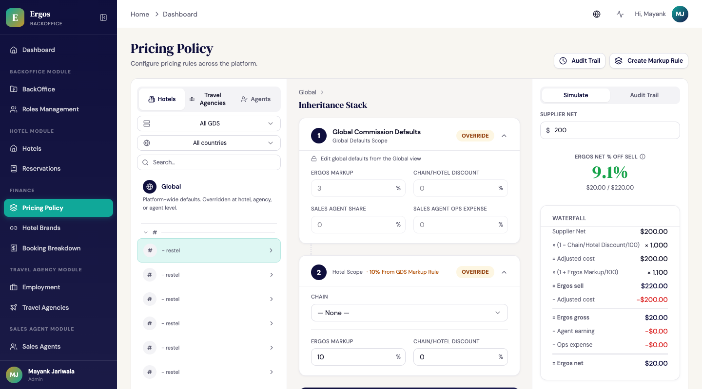
baseCommissionSource resolved at policy-read time. File: commission-screenshots/03-inheritance-cascade-source.pngbaseCommission was set to 3% (down from 15%) per stakeholder ratification. The schema enforces min: 1, max: 100. All 105,761 existing hotel.baseCommission values in the test environment were cleared by migrate-clear-hotel-basecommission.ts so the markup_rules cascade takes over. Hotels that genuinely need a per-hotel override can have one set via the Hotel layer card or via markup_rules[scope='hotel'] through the Create Markup Rule drawer.
Which party owns each variable?
The 5 layers above are policy locations. The fields you edit inside those layers each represent a different party's money. The most common confusion is over earningPercentage — it is the sales agent's cut, not Ergos's and not the agency's.
- Ergos earns via
baseCommission(the markup that createsergosGross). - The travel agency earns via
rebatePct(cashback from Ergos) and via its own customer-facing markup (captured separately in the agency app). - The sales agent earns via
earningPercentage— the agent's share of Ergos's gross margin, not of sell price.
| Field | Stored on | Whose money? | Meaning | Unit / range |
|---|---|---|---|---|
| baseCommission | markup_rules collection · Hotel (legacy) · CommissionDefaults (global) | Ergos | Markup applied on top of the GDS's adjusted cost. Drives ergosSell = adjustedCost × (1 + baseCommission/100). Higher → Ergos earns more. Default 3 per 2026-05-27 policy. Resolved through a 7-step cascade (hotel.baseCommission → hotel_rule → chain_rule → stars_rule → country_rule → gds_rule → global default) — see the markup_rules cascade subsection above. |
1–100 integer (3 = 3%) |
| chainDiscountPct | Hotel · Chain · CommissionDefaults | GDS (cost-side) | Negotiated chain discount as a percentage off GDS net. 15 = 15% off cost. Higher → better margin for Ergos. Default 0 means no discount. Schema validators on the Hotel model enforce min: 0, max: 100. |
0–100 integer (15 = 15% off) |
| rebatePct | per (Agency, Hotel) | Travel agency | Cashback paid to the agency, taken off ergosSell. 4 = 4% rebate. In-house Ergos agency uses 0. Stored in the travel_agency_commission collection as commissionPercentage; surfaced via API/UI as rebatePct. |
0–100 integer (4 = 4%) |
| earningPercentage | SalesAgent · CommissionDefaults · SalesAgentCommission (per-hotel override) | Sales agent | Agent's slice of Ergos's GROSS margin — NOT of sell, NOT Ergos's net, NOT the agency's. 24 = the agent keeps 24% of ergosGross. Default per tier (clamped to the tier's earningRange); per-(agent, hotel) overrides win. Overrides are stored in the agencies_commissions collection (model: SalesAgentCommission) as commissionPercentage; surfaced as earningPctOverride. The same collection row also carries an optional opsExpenseOverride — both can be set independently per (agent, hotel) pair. |
0–100 integer (no runtime cap; tier defaults max out at 32%) |
| operationalExpense | SalesAgent · CommissionDefaults | Agent's overhead | Agent's operational expense modeled as a percentage of Ergos gross (back-office cost, dispute handling, ramp cost). Deducted alongside agent earning. | 0–100 integer |
commissionPercentage on the TravelAgency model and on the legacy sales-agent endpoint. These are aliases of the same concepts; the canonical names used end-to-end by the commission engine and stored on every booking snapshot are the ones in the table above.
1b. Agency-side markup → moved to dedicated guide
1b. Markup del lado de la agencia → movido a una guía dedicada
Section 1 above covers the Ergos-side commission cascade (what Ergos earns and how the policy layers stack). The agency-side markup — how each travel agency configures the percentage they add on top of Ergos sell to arrive at customer price — has its own dedicated guide with screenshots, a worked example, and the booking-time snapshot fields:
La sección 1 anterior cubre la cascada de comisiones del lado de Ergos (lo que Ergos gana y cómo se apilan las capas de política). El markup del lado de la agencia — cómo cada agencia de viajes configura el porcentaje que agrega sobre Ergos sell para llegar al precio cliente — tiene su propia guía dedicada con capturas, un ejemplo trabajado y los campos del snapshot al momento de la reserva:
agencyMarkupSourceSnapshot field.
→ Leer la guía dedicada: cómo configuran las agencias el markup. Cubre la cascada de 4 niveles (Marca · País · Categoría · Hotel), el editor de Markup Rules, el widget de vista previa de la cascada, la vista de auditoría del backoffice y el campo del snapshot al momento de la reserva agencyMarkupSourceSnapshot.
2. Screen: Pricing Policy /pricing-policy
2. Pantalla: Política de Precios /pricing-policy
This is the main workspace where admins view and edit the commission policy for four scopes: a specific hotel, a specific chain, a specific sales agent, or a specific travel agency. It uses a 3-panel layout: pick the scope on the left, see the inheritance stack in the center, see the math on the right.
Este es el área principal donde los admins ven y editan la política de comisiones para cuatro scopes: un hotel específico, una cadena específica, un agente de ventas específico o una agencia de viajes específica. Usa un layout de 3 paneles: elegí el scope a la izquierda, mirá la pila de herencia en el centro, mirá la matemática a la derecha.
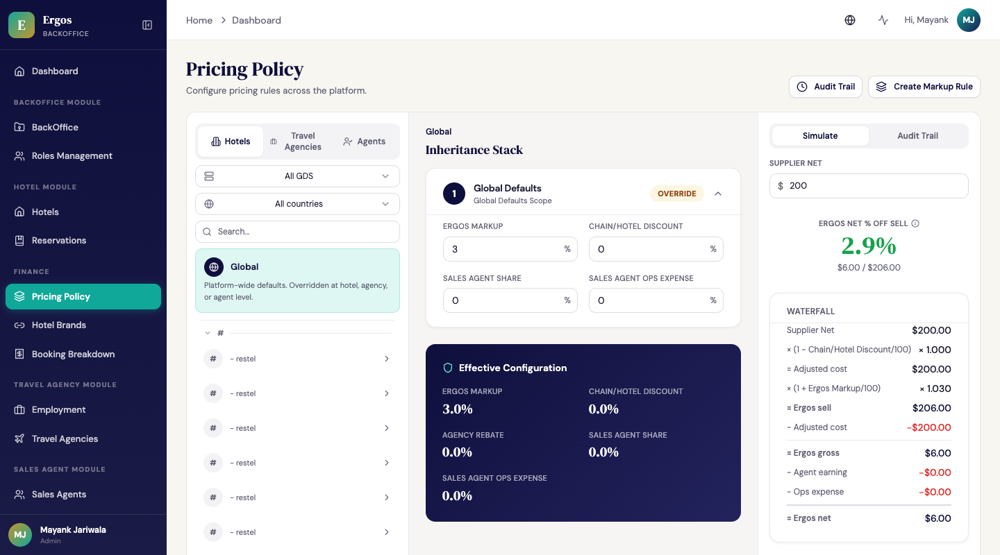
View wireframe (text-art version)
Additional screenshots referenced below: 02-hotel-layer-card.png, 04-agents-tab-layer-locking.png, 04-simulate-panel.png, 06-leftrail-accordion-collapsed.png.
Left rail — what you're looking at
Panel izquierdo — qué estás viendo
- Four scope tabs: Hotels / Chains / Sales Agents / Travel Agencies (in that order). Each tab shows a different list; the active tab drives what the center panel displays.
- Alphabetical accordion grouping: items in every tab are grouped under letter-header buttons (A, B, C…; # for non-letter starts). Clicking a letter header collapses or expands all items under it. The header shows the count when collapsed (e.g. "A (4029)").
- Lazy pagination (Hotels only): fetches 200 hotels at a time. The next page loads automatically when the user scrolls within 50 rows of the end — replacing the previous behavior of loading all 105k+ hotels at once. The
/admin/hotelsroute now honorssortBy=name-asc. - GDS dropdown + Country dropdown + search box drive server-side filtering of the hotel list. Type 3+ chars in the search box — after 300ms idle, the server returns matching hotels. The GDS filter narrows the country options.
- ★ Global pinned button at the top — shows the global defaults view regardless of which tab is active.
- Cuatro pestañas de scope: Hotels / Chains / Sales Agents / Travel Agencies (en ese orden). Cada pestaña muestra una lista distinta; la pestaña activa determina lo que se ve en el panel central.
- Agrupación alfabética en acordeón: los ítems en cada pestaña se agrupan bajo botones de cabecera de letra (A, B, C…; # para los que no empiezan con letra). Hacer clic en una cabecera colapsa o expande todos los ítems debajo. La cabecera muestra el conteo cuando está colapsada (ej. "A (4029)").
- Paginación lazy (solo Hotels): trae 200 hoteles a la vez. La siguiente página se carga automáticamente cuando el usuario llega a 50 filas del final — reemplazando el comportamiento previo de cargar los más de 105,000 hoteles de una vez. La ruta
/admin/hotelsahora respetasortBy=name-asc. - Dropdown de GDS + dropdown de país + caja de búsqueda filtran la lista de hoteles del lado del servidor. Escribí 3+ caracteres en la caja de búsqueda — después de 300ms inactivos, el servidor devuelve los hoteles que coinciden. El filtro de GDS limita las opciones de país.
- Botón ★ Global fijo en la parte de arriba — muestra la vista de valores por defecto globales sin importar la pestaña activa.
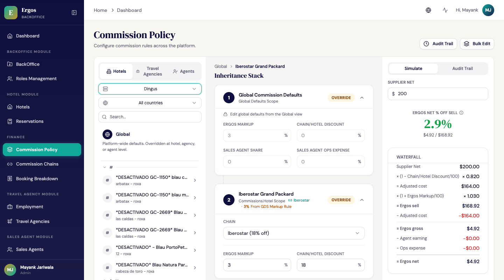
Center panel — the inheritance stack and layer-locking
Panel central — la pila de herencia y el bloqueo de capas
- Each card is a layer, connected by a dotted line (visual metaphor for the cascade).
- Cards show an Inherited badge (grey) when no override is active, or Overridden (gold) when one is.
- The Hotel layer has a Chain dropdown that links the hotel to a chain in the registry, as well as the chainDiscountPct input.
- The Tier card (Layer 4) is always read-only with a lock badge — tier defaults live in code (
TIER_DEFAULTS), not in the database. - Below the 5 cards: a dark blue Effective Configuration summary showing the final resolved values, including a cascade-source label for
baseCommission(e.g. "from GDS markup rule", "from chain markup rule", "global default").
- Cada tarjeta es una capa, conectada por una línea punteada (metáfora visual de la cascada).
- Las tarjetas muestran un badge Inherited (gris) cuando no hay override activo, o Overridden (dorado) cuando sí lo hay.
- La capa Hotel tiene un dropdown de Chain que vincula el hotel con una cadena del registro, además del input chainDiscountPct.
- La tarjeta del Tier (Capa 4) es siempre solo lectura con un badge de candado — los valores por defecto del tier viven en código (
TIER_DEFAULTS), no en la base de datos. - Debajo de las 5 tarjetas: un resumen azul oscuro Effective Configuration que muestra los valores finales resueltos, incluyendo una etiqueta de origen de cascada para
baseCommission(ej. "from GDS markup rule", "from chain markup rule", "global default").
Layer-locking guardrails
Salvaguardas de bloqueo de capas
When a specific scope item is selected, upstream layers that are out of scope for that view become read-only or hidden to reduce noise and prevent accidental edits:
Cuando se selecciona un ítem de scope específico, las capas upstream que están fuera de scope para esa vista pasan a solo lectura o se ocultan para reducir ruido y evitar ediciones accidentales:
- Hotels tab + hotel selected: Layer 1 (Global Defaults) is read-only. Layers 2–5 are editable.
- Chains tab + chain selected: Layer 1 (Global) is read-only; a chain-scope
baseCommissionmarkup_rule and the chain'schainDiscountPctare editable — these cascade down to every hotel linked to this chain (a per-hotel override on the Hotels tab still wins over the chain value). Layers 3 (Agency Rebate), 4 (Tier), and 5 (Agent-Hotel Override) are hidden — they are irrelevant to chain-level policy. - Agents tab + agent selected: Layer 1 (Global) is read-only; Layers 2 (Hotel) and 3 (Agency Rebate) are hidden entirely. Only Layer 4 (Tier, locked) and Layer 5 (Agent-Hotel Override) are shown.
- Agencies tab + agency selected: Layer 1 (Global) is read-only; Layer 3 (Agency Rebate /
defaultRebatePct) is editable; all other layers are hidden.
- Pestaña Hotels + hotel seleccionado: la Capa 1 (Global Defaults) es solo lectura. Las Capas 2–5 son editables.
- Pestaña Chains + cadena seleccionada: la Capa 1 (Global) es solo lectura; son editables una markup_rule de
baseCommissiona nivel cadena y elchainDiscountPctde la cadena — estos descienden por cascada a cada hotel vinculado a esta cadena (un override por hotel en la pestaña Hotels sigue ganando sobre el valor de la cadena). Las Capas 3 (Agency Rebate), 4 (Tier) y 5 (Agent-Hotel Override) se ocultan — son irrelevantes para la política a nivel cadena. - Pestaña Agents + agente seleccionado: la Capa 1 (Global) es solo lectura; las Capas 2 (Hotel) y 3 (Agency Rebate) se ocultan por completo. Solo se muestran la Capa 4 (Tier, bloqueada) y la Capa 5 (Agent-Hotel Override).
- Pestaña Agencies + agencia seleccionada: la Capa 1 (Global) es solo lectura; la Capa 3 (Agency Rebate /
defaultRebatePct) es editable; el resto de las capas se ocultan.
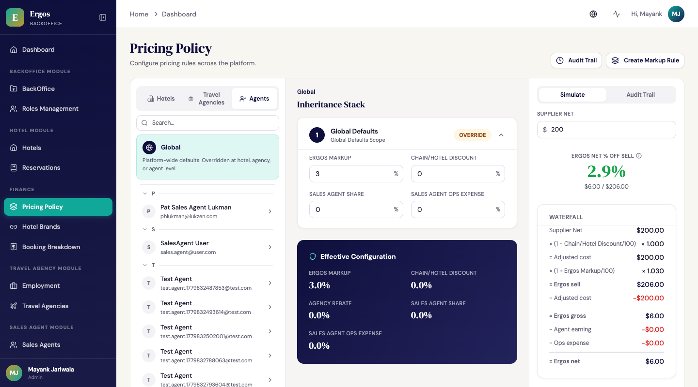
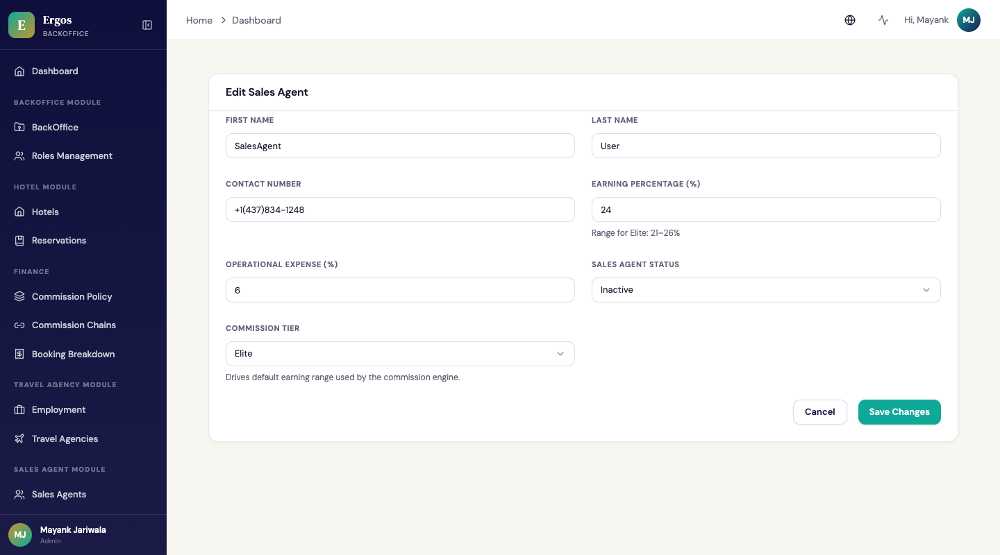
Travel Agencies tab
Pestaña Agencias de Viajes
The Agencies tab mirrors the Agents tab pattern. The left rail lists travel agencies alphabetically (with the same accordion grouping). Selecting an agency opens a simplified center panel containing only two cards:
La pestaña Agencies refleja el patrón de la pestaña Agents. El panel izquierdo lista las agencias de viajes alfabéticamente (con la misma agrupación en acordeón). Seleccionar una agencia abre un panel central simplificado que contiene solo dos tarjetas:
- Global Defaults — read-only (upstream lock).
- Agency Rebate — editable. This sets
agency.defaultRebatePct, which becomes the fallback rebate for all bookings by this agency when no per-(agency, hotel) override exists. The cascade is: per-(agency, hotel) override →agency.defaultRebatePct→ 0.
- Global Defaults — solo lectura (bloqueo upstream).
- Agency Rebate — editable. Esto fija
agency.defaultRebatePct, que pasa a ser el rebate de fallback para todas las reservas de esta agencia cuando no existe un override por (agencia, hotel). La cascada es: override por (agencia, hotel) →agency.defaultRebatePct→ 0.
Hotel (Layer 2), Tier (Layer 4), and Agent-Hotel Override (Layer 5) cards are all hidden — they are irrelevant when configuring an agency's rebate default. Per-(agency, hotel) overrides continue to be edited from the Travel Agency module's Hotel Commission Overrides tab.
Las tarjetas Hotel (Capa 2), Tier (Capa 4) y Agent-Hotel Override (Capa 5) se ocultan — son irrelevantes cuando se configura el rebate por defecto de una agencia. Los overrides por (agencia, hotel) siguen editándose desde la pestaña Hotel Commission Overrides del módulo Travel Agency.

Right rail — what the math says
Panel derecho — lo que dice la matemática
- Simulate tab: type a supplier net price → see the full waterfall (GDS net → adjusted cost → Ergos sell → Ergos gross → Ergos net). The label reads "Ergos net % off sell" (previously "% of sell" — corrected to match standard margin-of-sell convention). A tooltip explains why the displayed percentage (e.g. 2.9%) differs from the
baseCommissioninput (e.g. 3%): markup over cost compresses to a smaller margin of sell. - Audit tab: inline quick-view of the latest 50 entries for the currently-selected scope.
- Pestaña Simulate: escribí un precio supplier net → mirá el waterfall completo (GDS net → adjusted cost → Ergos sell → Ergos gross → Ergos net). La etiqueta dice "Ergos net % off sell" (antes "% of sell" — corregido para coincidir con la convención estándar de margen sobre venta). Un tooltip explica por qué el porcentaje mostrado (ej. 2.9%) difiere del input
baseCommission(ej. 3%): el markup sobre el costo se comprime en un margen menor sobre venta. - Pestaña Audit: vista rápida inline de las últimas 50 entradas para el scope actualmente seleccionado.

Header actions (top right)
Acciones del encabezado (arriba a la derecha)
- Audit Trail button — opens a full-page drawer with date / scope / admin filters and pagination.
- Create Markup Rule button — opens a drawer to create or update
markup_rulesfor a chosen scope.
- Botón Audit Trail — abre un cajón de página completa con filtros de fecha / scope / admin y paginación.
- Botón Create Markup Rule — abre un cajón para crear o actualizar
markup_rulespara un scope elegido.
Create Markup Rule drawer — redesigned scope-based workflow
Cajón Create Markup Rule — flujo rediseñado basado en scope
The drawer now starts with a Scope selector: GDS / Country / Stars / Individual hotels. The selected scope determines which input becomes the rule's identifier; other filter inputs narrow the live preview only.
El cajón ahora arranca con un selector Scope: GDS / Country / Stars / Individual hotels. El scope seleccionado determina cuál input pasa a ser el identifier de la regla; los otros inputs filtro solo achican la vista previa en vivo.
- GDS scope — the picked vendor key becomes the identifier. One rule covers every hotel from that GDS without a more-specific rule above it.
- Country scope — the picked country becomes the identifier.
- Stars scope — the picked star rating (e.g. "5") becomes the identifier.
- Individual hotels — no single identifier; each matched hotel gets its own
scope='hotel'rule via bulk upsert. - Chain scope is supported by the backend (
markup_rules[scope='chain']) but is not yet exposed in the UI dropdown — set via the Hotel Brands → chain markup_rules endpoint directly.
The live preview (debounced 300ms, race-guarded) shows how many hotels match the current filters and samples old → new values. The Apply button is enabled only when you type "APPLY" exactly (the input now auto-uppercases at the source, fixing a previous bug where CSS uppercase made lowercase input appear valid but the gate still failed).
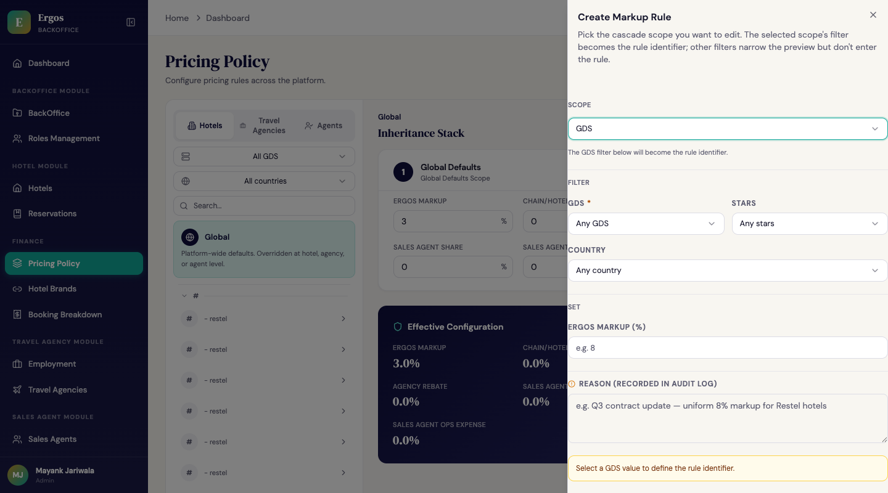
markup_rules row with scope='gds', identifier='restel' that applies to all Restel hotels without a more-specific rule. File: commission-screenshots/05-bulk-edit-scope-selector.png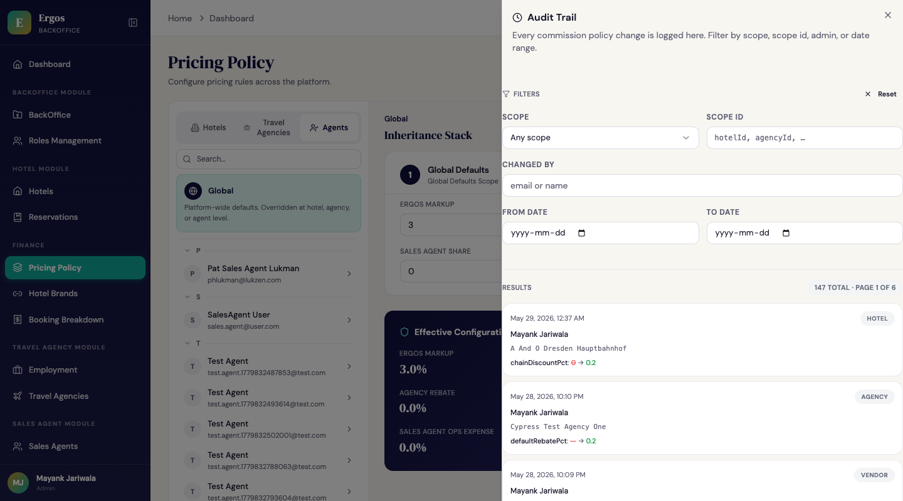
3. Screen: Hotel Brands /hotel-brands
3. Pantalla: Marcas Hoteleras /hotel-brands
This screen manages the chain registry. A chain represents a contractual relationship with a hotel chain (Meliá, Iberostar, etc.) — including any negotiated discount, contract status, and dates.
Esta pantalla administra el registro de cadenas. Una cadena representa una relación contractual con una cadena hotelera (Meliá, Iberostar, etc.) — incluyendo cualquier descuento negociado, estado del contrato y fechas.
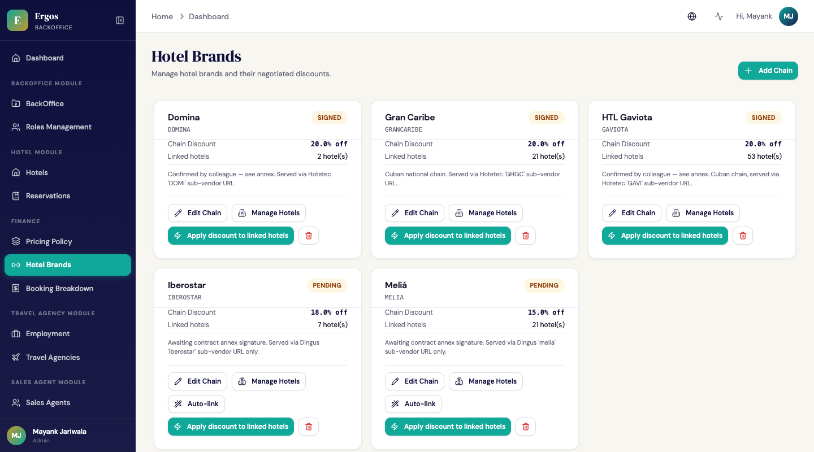
baseCommission field — chain-level markup overrides moved to markup_rules. File: commission-screenshots/06-commission-chains-grid.pngbaseCommission — los overrides de markup a nivel cadena se movieron a markup_rules. Archivo: commission-screenshots/06-commission-chains-grid.pngView wireframe (text-art version)
The 5 chains currently seeded
Las 5 cadenas actualmente sembradas
From backend-service/src/scripts/seed-commission-chains.ts. Auto-link matching uses two signals: matchPatterns (case-insensitive substring on hotel.name) and applicableVendors (matches against hotel.vendor — the sub-vendor code the catalog sync recorded). When matchPatterns is empty, the chain is vendor-only — every hotel returned by that sub-vendor feed is considered a member.
Desde backend-service/src/scripts/seed-commission-chains.ts. La coincidencia para auto-link usa dos señales: matchPatterns (substring case-insensitive sobre hotel.name) y applicableVendors (coincide contra hotel.vendor — el código de sub-vendor que registró el catalog sync). Cuando matchPatterns está vacío, la cadena es solo-vendor — cada hotel devuelto por ese feed de sub-vendor se considera miembro.
| Chain | Code | chainDiscountPct | contractStatus | GDS / sub-vendor | matchPatterns |
|---|---|---|---|---|---|
| Domina | DOMINA | 20 | signed | Hotetec / DOMI |
(none — vendor-only) |
| Meliá | MELIA | 15 | pending | Dingus / melia |
meliá, melia, paradisus, sol by meliá, innside by meliá, gran meliá |
| Iberostar | IBEROSTAR | 18 | pending | Dingus / iberostar |
iberostar |
| Gran Caribe | GRANCARIBE | 20 | signed | Hotetec / GHGC |
(none — vendor-only) |
| HTL Gaviota | GAVIOTA | 20 | signed | Hotetec / GAVI |
(none — vendor-only) |
vendor code per hotel that names the sub-feed (e.g. melia for the Meliá feed, DOMI for the Domina feed). A chain's applicableVendors array gates whether the chain discount applies to a candidate hotel even if its name matches. For chains where the entire sub-feed is by definition that chain (Cuban national chains, Domina), matchPatterns is empty — vendor membership alone qualifies.
vendor por hotel que nombra el sub-feed (ej. melia para el feed de Meliá, DOMI para el feed de Domina). El array applicableVendors de una cadena gobierna si el descuento de la cadena aplica a un hotel candidato incluso si su nombre coincide. Para cadenas donde todo el sub-feed es por definición esa cadena (cadenas nacionales cubanas, Domina), matchPatterns está vacío — la pertenencia al vendor sola califica.
Each chain card has 4 actions
Cada tarjeta de cadena tiene 4 acciones
1. Edit Chain
1. Editar Cadena
Opens a form to change name, code, hasDiscount flag, chainDiscountPct, contract status (signed/pending/expired), effective/expiry dates, notes, hotel name match patterns, and applicable vendors. The form does not contain a baseCommission field — chain-level Ergos markup overrides now live in the markup_rules collection (scope=chain) and are managed via the Create Markup Rule drawer or the /admin/markup-rules API endpoint. The CommissionChain.baseCommission field was removed from the Mongoose schema on 2026-05-28 (strict mode drops any writes to it); the migration script migrate-chain-basecommission-to-rules.ts moved existing values to markup_rules rows.
Abre un formulario para cambiar nombre, código, flag hasDiscount, chainDiscountPct, estado del contrato (signed/pending/expired), fechas effective/expiry, notas, patrones de coincidencia de nombre de hotel y vendors aplicables. El formulario no contiene un campo baseCommission — los overrides de markup de Ergos a nivel cadena ahora viven en la colección markup_rules (scope=chain) y se administran vía el cajón Create Markup Rule o el endpoint API /admin/markup-rules. El campo CommissionChain.baseCommission se eliminó del esquema Mongoose el 2026-05-28 (el modo strict descarta cualquier escritura); el script de migración migrate-chain-basecommission-to-rules.ts movió los valores existentes a filas de markup_rules.
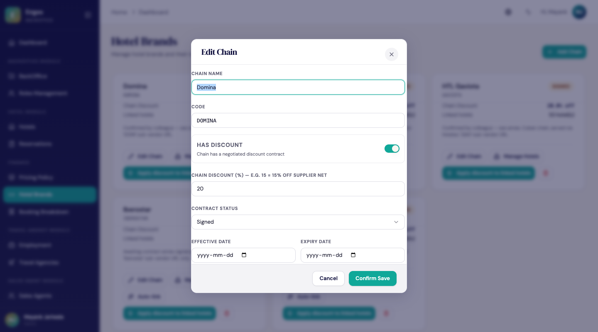
baseCommission field. Chain-level markup overrides are managed via the markup_rules collection. File: commission-screenshots/08-chain-edit-no-basecommission.pngbaseCommission. Los overrides de markup a nivel de cadena se administran vía la colección markup_rules. Archivo: commission-screenshots/08-chain-edit-no-basecommission.png2. Manage Hotels — the LinkedHotelsDialog
2. Administrar Hoteles — el LinkedHotelsDialog
The most useful action for chains with many hotels. Opens a side-drawer with two stacked sections:
La acción más útil para cadenas con muchos hoteles. Abre un cajón lateral con dos secciones apiladas:
- Top section: hotels currently linked, with per-row Unlink button.
- Bottom section: server-side hotel search (debounced 300ms) + country filter. Multi-select hotels to bulk-link.
- Already-linked hotels are greyed out in the search results so you don't try to link them again.
- Every link/unlink writes a per-hotel audit entry — the chain field, old/new value, and your reason text.
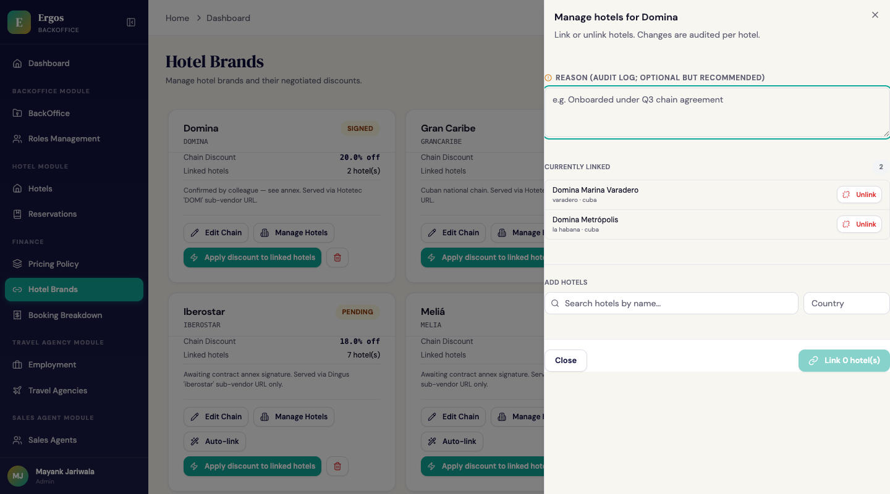
3. Apply discount to linked hotels
3. Aplicar descuento a hoteles vinculados
Only visible when the chain has a discount AND there are linked hotels. This is the chain → hotel cascade, made explicit. Clicking it:
- Asks for confirmation: "Apply 15% off to N hotel(s)?"
- Lets you add a reason text
- On confirm, writes each linked hotel's
chainDiscountPctto the chain's value - Creates one audit entry per affected hotel (not one bulk entry — per-hotel granularity)
4. Delete Chain
4. Eliminar Cadena
Only allowed if 0 hotels are linked. Otherwise blocked with a clear message: "Cannot delete — N hotel(s) still linked. Unlink them first."
4. Save Flow SaveConfirmModal
4. Flujo de Guardado SaveConfirmModal
minErgosNetPct = 5%, maxAgentPctOfGross = 32%, minErgosPctOfGross = 50%). These were inherited from an early business spec and did not reflect the stakeholder-ratified commission picture (GDS → chain discount → Ergos markup → optional agency rebate → travel-agency markup). They were removed from the engine, frontend mirror, SaveConfirmModal, and right-rail UI. The only floor enforced today is the schema-level baseCommission ≥ 1.
Active lock-in:Bloqueo activo: the no-guardrail state is asserted by 4 cypress tests in
backoffice-app/cypress/e2e/commission-policy-save-flow.cy.ts (added in commit c99a218). Any accidental re-introduction of the Guardrails section in the right rail, the reason textarea, the "Cannot proceed" badge, or any of the 8 removed locale strings will fail the suite — so the doc and the code can't drift on this without breaking CI.
The SaveConfirmModal is a confirmation step — diff in, audit out. No runtime guardrails are evaluated.
El SaveConfirmModal es un paso de confirmación — entra el diff, sale la auditoría. No se evalúan salvaguardas en runtime.
When you click "Review and Save"
Cuando haces clic en "Revisar y Guardar"
The modal shows you:
- Proposed changes — a table of every field that will change, scoped by entity (hotel, agency, agent, etc.).
- Cancel / Confirm Save — the only two actions. There is no warning state, no required reason, no hard block. Schema-level invariants (e.g.
baseCommission ≥ 1) are still enforced server-side; if a save would violate them, the backend returns 400 and the dialog surfaces the message inline.
El modal te muestra:
- Cambios propuestos — una tabla de cada campo que va a cambiar, agrupado por entidad (hotel, agencia, agente, etc.).
- Cancelar / Confirmar Guardado — las únicas dos acciones. No hay estado de advertencia, ni razón requerida, ni bloqueo duro. Las invariantes a nivel esquema (ej.
baseCommission ≥ 1) siguen siendo enforced del lado servidor; si un save las violara, el backend devuelve 400 y el diálogo muestra el mensaje inline.
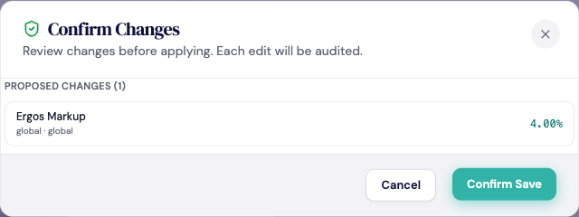
Centralized audit
Auditoría centralizada
On confirm, the page POSTs each layer's changes to a single centralized endpoint (PATCH /admin/pricing-policy/layer/{scope}/{scopeId}) which writes the change AND an audit entry atomically. Every edit is therefore traceable to who changed what, when, and to what new value — independent of whether any threshold was crossed.
Al confirmar, la página hace POST de los cambios de cada capa a un único endpoint centralizado (PATCH /admin/pricing-policy/layer/{scope}/{scopeId}) que escribe el cambio Y una entrada de auditoría de forma atómica. Cada edición es entonces rastreable a quién cambió qué, cuándo y a qué valor nuevo — independiente de si se cruzó algún umbral.
5. Booking-time Snapshot Compliance + dispute resolution
5. Instantánea al Momento de la Reserva Cumplimiento + resolución de disputas
Every booking — single-room or multi-room — stores a frozen copy of the resolved commission policy at the moment of booking. This guarantees that if the policy changes later, the booking's original terms are still recoverable.
Cada reserva — sea single-room o multi-room — almacena una copia congelada de la política de comisión resuelta en el momento de la reserva. Esto garantiza que si la política cambia después, los términos originales de la reserva siguen siendo recuperables.
What's stored on each booking
Qué se almacena en cada reserva
commissionSnapshot (driven by the commission engine) and the agency-side agencyMarkupPctSnapshot stored alongside it — are whole-percent integers. 15 means 15%, not 0.15. The agency markup lives outside the commission engine's math (it doesn't affect any payout calculation), but the storage format, validation rules, API contract, and input controls all follow the same integer pattern as every other percent field. The freeze logic in booking.service.ts writes the two snapshot blocks independently — one can succeed while the other fails (e.g. an agency without a configured defaultMarkupPct) — but their formats now match.
Price Consistency Across the Agency-App Funnel
Consistencia de Precio en el Funnel de la Agency-App
agencyCustomerPrice is frozen on each booking alongside commissionSnapshot, then surfaced through the booking DTO so every downstream view reads the same number. The confirmation page and the /bookings list both render agencyCustomerPrice ?? totalAmount, falling back only when no snapshot exists (legacy data). The rate card on /rooms/:hotelId applies user.defaultMarkupPct through computeCustomerPrice(ergosSell, markupPct), so the price the customer sees at browse time equals the price they see at confirmation.
agencyCustomerPrice queda congelado en cada reserva junto con commissionSnapshot y se expone a través del DTO de la reserva, para que cada vista downstream lea el mismo número. La página de confirmación y el listado /bookings renderizan agencyCustomerPrice ?? totalAmount, recurriendo al fallback sólo cuando no existe snapshot (datos legacy). El rate card en /rooms/:hotelId aplica user.defaultMarkupPct mediante computeCustomerPrice(ergosSell, markupPct), de modo que el precio que ve el cliente al navegar es el mismo que ve en la confirmación.
Worked example: GDS net $130.00 → Ergos sell $136.02 → 15% agency markup → customer sees $156.42 on the rate card, the checkout summary, the confirmation page, and the /bookings list. The pre-freeze bug where the rate card showed $136.02 and confirmation jumped to $156.42 is gone — the marked-up number is computed once at browse, frozen at booking, and re-read everywhere after.
Ejemplo trabajado: GDS net $130.00 → Ergos sell $136.02 → 15% de markup de agencia → el cliente ve $156.42 en el rate card, en el resumen de checkout, en la página de confirmación y en el listado /bookings. El bug previo al freeze donde el rate card mostraba $136.02 y la confirmación saltaba a $156.42 está resuelto — el número con markup se calcula una vez al navegar, se congela al reservar, y se vuelve a leer en todos lados después.
Where it's visible
Dónde es visible
On the backoffice booking detail page (/reservations/:id), a "Commission Snapshot" card appears below the price distribution table. It shows the 5 percentages, a "Frozen at booking time" badge, and the resolution timestamp.
En la página de detalle de reserva del backoffice (/reservations/:id), aparece una tarjeta "Commission Snapshot" debajo de la tabla de distribución de precios. Muestra los 5 porcentajes, un badge "Frozen at booking time" y el timestamp de resolución.
On the agency app (agency-app) /bookings/:id page, a "Your Earnings (P&L)" card shows the agency's view: Ergos cost, customer paid, markup income (customerPrice − ergosSell), rebate income (ergosSell × rebatePct/100), and total profit — all computed from the same snapshot. There is also an aggregate Agency P&L page at /pnl (route GENERAL_ROUTES.pnl) listing per-booking earnings over a date range. The agency-app rate card (/rooms/:hotelId) applies user.defaultMarkupPct via computeCustomerPrice(ergosSell, markupPct) at browse time, so the marked-up price matches what the customer sees throughout the funnel.
En la agency app (agency-app) página /bookings/:id, una tarjeta "Your Earnings (P&L)" muestra la vista de la agencia: costo Ergos, lo pagado por el cliente, ingreso por markup (customerPrice − ergosSell), ingreso por rebate (ergosSell × rebatePct/100) y la ganancia total — todo calculado desde la misma instantánea. También hay una página agregada Agency P&L en /pnl (ruta GENERAL_ROUTES.pnl) que lista las ganancias por reserva en un rango de fechas. El rate card de la agency-app (/rooms/:hotelId) aplica user.defaultMarkupPct mediante computeCustomerPrice(ergosSell, markupPct) al momento de navegar, de modo que el precio con markup coincide con lo que ve el cliente a lo largo de todo el funnel.
Backoffice Booking Breakdown table
Tabla de Booking Breakdown del Backoffice
The backoffice /finance/booking-breakdown table now exposes 5 financial columns, in this order: Ergos markup, Agency rebate, Sales agent earning, Agency markup, Customer price. Each cell renders as "$X.XX (Y.Y%)" (e.g. "$5.23 (4.0%)") via the finance-row.service.ts helpers — buildFinanceRow assembles the per-row figures from the frozen commissionSnapshot and expandFinanceWaterfall formats the dollar + percent pair.
La tabla /finance/booking-breakdown del backoffice ahora expone 5 columnas financieras, en este orden: Ergos markup, Agency rebate, Sales agent earning, Agency markup, Customer price. Cada celda se renderiza como "$X.XX (Y.Y%)" (por ejemplo "$5.23 (4.0%)") mediante los helpers de finance-row.service.ts — buildFinanceRow arma las cifras por fila desde el commissionSnapshot congelado y expandFinanceWaterfall formatea el par de dólar + porcentaje.
All columns are sortable: sortBy + sortDir push to the backend (DB-pushed for createdAt, bookingReference, status, hotelName), while computed financial fields sort in-memory after the per-row math. Cells without a frozen commissionSnapshot render '—'.
Todas las columnas son ordenables: sortBy + sortDir se empujan al backend (ordenamiento por DB para createdAt, bookingReference, status, hotelName), mientras que los campos financieros calculados se ordenan en memoria después de la matemática por fila. Las celdas sin un commissionSnapshot congelado renderizan '—'.
The agency P&L endpoint (/travel-agency/:id/pnl) also accepts sortBy + sortDir on all 10 visible columns; the totals row stays identical regardless of sort order. Both the finance and P&L date-range filters now snap the "to" bound to end-of-day UTC (23:59:59.999), so same-day bookings created after midnight are included.
El endpoint de P&L de la agencia (/travel-agency/:id/pnl) también acepta sortBy + sortDir en las 10 columnas visibles; la fila de totales queda idéntica sin importar el orden. Los filtros de rango de fecha de finance y P&L ahora ajustan el límite "hasta" al fin del día UTC (23:59:59.999), de modo que se incluyen las reservas del mismo día creadas pasada la medianoche.
6. Money Flow — Who Earns What All 4 parties
6. Flujo del Dinero — Quién Gana Qué Las 4 partes
Sections 1-5 explained how Ergos prices a booking and protects its margins. But every booking involves 4 parties — the hotel, Ergos, the travel agency, and the sales agent — and each one makes money differently. This section makes the full money flow explicit, including the recently-shipped agency markup feature that lets the platform capture and report the agency's customer-facing price.
Las secciones 1-5 explicaron cómo Ergos tarifica una reserva y protege sus márgenes. Pero cada reserva involucra 4 partes — el hotel, Ergos, la agencia de viajes y el agente comercial — y cada una gana dinero de forma distinta. Esta sección hace explícito el flujo completo del dinero, incluyendo la feature recientemente lanzada de markup de la agencia que permite a la plataforma capturar y reportar el precio al cliente final de la agencia.
- 5-layer commission policy (Section 1) — how Ergos's INTERNAL policy is structured: Global → Hotel → Agency → Tier → Agent-Hotel Override
- 4-layer pricing chain (this section) — how money flows from end customer back through to the hotel: GDS Net → Adjusted Cost → Ergos Sell → Agency Sell
- Política de comisión de 5 capas (Sección 1) — cómo está estructurada la política INTERNA de Ergos: Global → Hotel → Agencia → Tier → Override Agente-Hotel
- Cadena de precios de 4 capas (esta sección) — cómo fluye el dinero desde el cliente final de vuelta al hotel: GDS Net → Adjusted Cost → Ergos Sell → Agency Sell
The 4-layer pricing chain
La cadena de precios de 4 capas
Every booking's price is shaped by four sequential stages. Each stage transforms the price one step further down the chain:
El precio de cada reserva se forma a través de cuatro etapas secuenciales. Cada etapa transforma el precio un paso más abajo en la cadena:
- Layer 0 — GDS Net: the hotel sets this rate
- Layer 1 — Adjusted Cost: Ergos's chain discount lowers the cost basis
- Layer 2 — Ergos Sell: Ergos's markup determines what the agency pays
- Layer 3 — Agency Sell: the agency's own markup determines what the customer pays — this is the agency's primary revenue lever
- Capa 0 — GDS Net: el hotel fija esta tarifa
- Capa 1 — Adjusted Cost: el descuento de cadena de Ergos baja la base del costo
- Capa 2 — Ergos Sell: el markup de Ergos determina lo que paga la agencia
- Capa 3 — Agency Sell: el markup propio de la agencia determina lo que paga el cliente — esta es la palanca primaria de ingreso de la agencia
How each party makes money
Cómo gana dinero cada parte
Each party's economics on a single Meliá booking with these numbers:
La economía de cada parte sobre una sola reserva de Meliá con estos números:
Hotel GDS
The hotel accepts the chain discount because Ergos brings high booking volume. From the hotel's perspective, $170 is what they collect per booking.
El hotel acepta el descuento de cadena porque Ergos aporta alto volumen de reservas. Desde la perspectiva del hotel, $170 es lo que cobran por reserva.
Ergos platform
Travel Agency distributor
The agency has two income streams, both modeled in the platform:
La agencia tiene dos flujos de ingresos, ambos modelados en la plataforma:
Sales Agent closer
The agent's "career" is about (a) moving up tiers (higher earning %), and (b) building booking volume. A Strategic-tier agent doing high-margin chain bookings can earn ~$120 per booking — but the system enforces that high-earning tiers only work on high-margin hotels.
La "carrera" del agente se trata de (a) subir de tier (mayor % de earning) y (b) construir volumen de reservas. Un agente Strategic haciendo reservas de cadena de alto margen puede ganar ~$120 por reserva — pero el sistema enforce que los tiers de alto earning solo funcionan en hoteles de alto margen.
Where every dollar goes (full reconciliation)
Adónde va cada dólar (reconciliación completa)
The customer paid $220.92 total. Here's where each dollar ends up:
El cliente pagó $220.92 en total. Acá va cada dólar:
| Recipient | $ from this booking | Source |
|---|---|---|
| Hotel | $170.00 | via Ergos (after 15% chain discount) |
| Travel Agency (markup income) | $28.82 | customer paid − what agency paid Ergos |
| Travel Agency (rebate income) | $7.68 | cashback from Ergos (4% of ergosSell) |
| Sales Agent (commission) | $3.46 | via Ergos (24% of gross, Elite tier) |
| Ergos (internal ops) | $0.86 | allocated to support, infrastructure, G&A |
| Ergos (net profit) | $10.10 | what Ergos actually retains |
| Total | $220.92 | = what the customer paid the agency |
The agency markup — out of scope for Ergos's commission policy
El markup de la agencia — fuera del alcance de la política de comisiones de Ergos
Layer 3 (Agency → Customer) sits outside our commission policy. The agency configures a defaultMarkupPct on their Profile page if they want to use the platform's optional invoicing helpers, but the value has zero effect on:
La Capa 3 (Agencia → Cliente) está fuera de nuestra política de comisiones. La agencia configura un defaultMarkupPct en su página de Perfil si quiere usar los helpers opcionales de facturación de la plataforma, pero el valor tiene cero efecto sobre:
- The Ergos sell price (what the agency pays Ergos)
- The agent's commission
- The Ergos net margin
- The savability of a commission policy
- El precio de venta Ergos (lo que la agencia paga a Ergos)
- La comisión del agente
- El margen neto de Ergos
- La posibilidad de guardar una política de comisiones
The agency markup is captured purely as a convenience feature so the agency can run their own P&L view inside the platform if they choose. They can also leave it blank and run their pricing entirely in their own POS — Ergos doesn't care.
El markup de la agencia se captura puramente como una feature de conveniencia para que la agencia pueda llevar su propia vista de P&L dentro de la plataforma si así lo elige. También pueden dejarlo en blanco y manejar sus precios enteramente en su propio POS — a Ergos no le importa.
What Ergos actually controls and prices for
Lo que Ergos realmente controla y tarifica
Because the agency markup is out of scope, Ergos's commission policy focuses exclusively on the two cost levers we do control:
Como el markup de la agencia está fuera de scope, la política de comisiones de Ergos se enfoca exclusivamente en las dos palancas de costo que sí controlamos:
| Lever | What it pays for | Why it matters |
|---|---|---|
Agent commission (baseline 18–24% of Ergos gross via SalesAgent.earningPercentage) |
The agent paid per booking, computed at booking time and frozen into commissionSnapshot |
This is the only commission flow implemented in the engine today. Resolved through tiers (Starter → Strategic) and optional per-(agent, hotel) overrides |
| Recruiting compensation (proposed — see §11, not yet implemented) | What Ergos would pay sales agents to recruit and retain travel agencies on the platform | Proposed growth lever. Each productive agency a sales agent recruits compounds Ergos's volume against a near-fixed cost base. Unit economics modeling in §11; no engine support yet |
Everything else (hotel net rate, ops cost per booking, agency rebate) is either contractually negotiated upstream, infrastructurally driven, or fixed by partnership terms. The commission policy's job is to balance these two controllable costs against the Ergos net floor — nothing more.
Todo lo demás (tarifa neta del hotel, costo de ops por reserva, rebate de la agencia) está negociado contractualmente upstream, está manejado por la infraestructura, o está fijado por términos de partnership. El trabajo de la política de comisiones es balancear estos dos costos controlables contra el piso de neto de Ergos — nada más.
Agency types — recap (no markup column)
Tipos de agencia — resumen (sin columna de markup)
| Agency type | Rebate % | Use case |
|---|---|---|
| In-house agency | 0% | Ergos's own travel agency — the price the customer pays IS the ergosSell, no rebate applies |
| Partner agency | 3-5% | Independent agency with negotiated partnership terms. Markup to their customer is their business. |
| Strategic partner | 5%+ | Very-high-volume partner with extended cashback to incentivize commitment. Still sets their own customer markup independently. |
7. Use Cases 12 worked examples
7. Casos de Uso 12 ejemplos trabajados
These are concrete scenarios you'll encounter, with the exact steps to execute them.
Estos son los escenarios concretos que vas a encontrar, con los pasos exactos para ejecutarlos.
First-time setup of a new hotel chain
Configuración inicial de una nueva cadena hotelera
- Go to
/hotel-brands→ click + Add Chain - Fill the form: name
Meliá, codeMELIA, hasDiscount ON, chainDiscountPct15(15% off), contractStatussigned, effectiveDate today, notes "Q3 master contract" - Save → new card appears with "0 hotel(s)"
- Click Manage Hotels on the Meliá card
- In the search box type
Meli→ server returns matching hotels after 300ms - Click all 12 Meliá hotels to select them → click Link 12 hotel(s)
- Back on the chain card → click ⚡ Apply discount to linked hotels
- Confirm dialog: "Apply 15% off to 12 hotel(s)?" → add reason "Initial chain contract activation" → confirm
chainDiscountPct 15 until renegotiated.chainDiscountPct 15 hasta que se renegocie.Renegotiating a chain discount
Renegociar un descuento de cadena
- Go to
/hotel-brands→ click Edit Chain on Iberostar - Change chainDiscountPct from
18(18% off) to22(22% off) - Update notes: "Q4 renewed contract — deeper discount"
- Save → chain card shows the new value
- Click ⚡ Apply discount to linked hotels
- Confirm: "Apply this chain's price adjustment (22) to all N linked hotel(s)?" → reason: "Q4 renegotiation activation" → confirm
chainDiscountPct 22. Each hotel gets an audit entry showing the change from 18 → 22. The chain itself also has audit entries for the chainDiscountPct edit.chainDiscountPct 22. Cada hotel recibe una entrada de auditoría mostrando el cambio de 18 → 22. La cadena misma también tiene entradas de auditoría por la edición de chainDiscountPct.Override an individual hotel's markup
Anular el markup de un hotel individual
- Go to
/pricing-policy→ click Create Markup Rule - In the Scope selector, choose Individual hotels
- In the search/filter, find and select Iberostar Grand Packard
- Set Ergos markup to
8 - Add reason: "Luxury property premium markup"
- Live preview shows "1 hotel(s) affected" — type
APPLYand click Apply
markup_rules row is created with scope='hotel', identifier=<hotelId>, baseCommission=8. The cascade source badge on that hotel's card now shows "from hotel markup rule". The GDS-level 3% rule still applies to all other Iberostar hotels. 1 audit entry written.markup_rules con scope='hotel', identifier=<hotelId>, baseCommission=8. El badge de origen de cascada en la tarjeta de ese hotel ahora muestra "from hotel markup rule". La regla de 3% a nivel GDS sigue aplicando al resto de hoteles Iberostar. Se escribe 1 entrada de auditoría.Set a markup for an entire GDS
Fijar un markup para todo un GDS
- Go to
/pricing-policy→ click Create Markup Rule in the page header - In the Scope selector at the top of the drawer, choose GDS
- In the vendor dropdown, select Restel
- Set Ergos markup to
5 - Add reason: "Restel arrangement — 5% platform markup"
- The live preview shows the matched hotel count (all Restel hotels that don't already have a more-specific rule). Type
APPLYand click Apply
markup_rules document is created with scope='gds', identifier='restel', baseCommission=5. Every Restel hotel that doesn't have a hotel_rule, chain_rule, stars_rule, or country_rule above it now resolves to 5%. Hotels that do have a more-specific rule are unaffected. 1 audit entry written. To override back for a specific Restel hotel, use "Individual hotels" scope targeting just that hotel.markup_rules con scope='gds', identifier='restel', baseCommission=5. Cada hotel Restel que no tenga una hotel_rule, chain_rule, stars_rule, o country_rule por encima ahora resuelve a 5%. Los hoteles que sí tienen una regla más específica no se ven afectados. Se escribe 1 entrada de auditoría. Para anular de vuelta para un Restel específico, usá el scope "Individual hotels" apuntando solo a ese hotel.Raise markup for all 5-star Hotetec hotels
Subir markup para todos los hoteles Hotetec de 5 estrellas
- Go to
/pricing-policy→ click Create Markup Rule - Scope: Stars → Stars value:
5 - Add GDS filter:
Hotetec(narrows the live preview to Hotetec-only hotels, but the rule identifier will be "5" — applies across all GDS) - Set Ergos markup to
9 - Add reason: "End-of-year uplift for 5-star inventory"
- Review preview count → type
APPLY→ Apply
markup_rules[scope='stars', identifier='5', baseCommission=9] document is created. All 5-star hotels across all GDS now resolve to 9% unless they have a more-specific hotel_rule or chain_rule above it. If you only want to affect Hotetec, use "Individual hotels" scope instead.markup_rules[scope='stars', identifier='5', baseCommission=9]. Todos los hoteles de 5 estrellas en todos los GDS ahora resuelven a 9% salvo que tengan una hotel_rule o chain_rule más específica por encima. Si solo querés afectar Hotetec, usá el scope "Individual hotels" en su lugar.Promoting an agent to a higher tier
Promover a un agente a un tier más alto
- Go to
/sales-agent→ find M. Ruiz → click Edit - Change the Commission Tier dropdown: Growth → Elite
- The Earning Percentage and Operational Expense inputs auto-populate to Elite's tier defaults (24% / 6%). The earning input also clamps its valid range to 21–26% (Elite's earningRange).
- Adjust if needed, then Save
SalesAgent.tier is now persisted as "Elite" (was previously being silently stripped by the Zod schema — fixed). Future commission resolutions use Elite tier defaults; the earning-range clamp in Layer 5 reflects the new tier. Bookings already made keep their snapshots — only new bookings use the new tier.SalesAgent.tier ahora se persiste como "Elite" (antes el esquema Zod lo descartaba silenciosamente — corregido). Las resoluciones de comisión futuras usan los valores por defecto del tier Elite; el clamp de rango de earning en la Capa 5 refleja el nuevo tier. Las reservas ya hechas mantienen sus instantáneas — solo las reservas nuevas usan el nuevo tier.Per-(agent, hotel) earning and ops override
Override de earning y ops por (agente, hotel)
- Go to
/pricing-policy→ Agents tab → select M. Ruiz - Inheritance stack shows only Tier (read-only) and Agent-Hotel Override cards
- On Layer 5 (Agent-Hotel Override), enter
28for earningPctOverride and4for opsExpenseOverride - Click Review and Save → SaveConfirmModal shows 2 proposed changes → Confirm Save
SalesAgentCommission document (collection: agencies_commissions) keyed on (M. Ruiz, Meliá BCN). Either can be cleared independently without affecting the other.SalesAgentCommission (colección: agencies_commissions) keyed en (M. Ruiz, Meliá BCN). Cualquiera puede limpiarse independientemente sin afectar al otro.Investigating commission on a past booking
Investigar la comisión en una reserva pasada
B-2847, claiming the rebate was wrong. The booking was made 2 months ago — policy has changed since.
B-2847, alegando que el rebate estuvo mal. La reserva se hizo hace 2 meses — la política cambió desde entonces.
- Go to
/reservations→ search forB-2847→ click into the booking detail page - Scroll past the Guest Info and Price Distribution sections
- Find the Commission Snapshot card (with shield icon and "Frozen at booking time" badge)
- Read the 6 values: baseCommission, baseCommissionSource, chainDiscountPct, rebatePct, earningPct, opsExpense + the resolvedAt timestamp. The
baseCommissionSourcefield tells you which cascade layer produced the markup at booking time (e.g.'gds_rule','chain_rule','default'). - (Optional) Compare with current policy by going to
/pricing-policyfor the same hotel and seeing how values have changed
Set an agency's default rebate percentage
Fijar el porcentaje de rebate por defecto de una agencia
- Go to
/pricing-policy→ click the Travel Agencies tab - Find and click Viajes Express in the left rail list
- The center panel shows Global Defaults (read-only) and the Agency Rebate card
- On the Agency Rebate card, enter
4for the default rebate percentage - Click Review and Save → Confirm Save
TravelAgency.defaultRebatePct is set to 4. All future bookings for Viajes Express where no per-(agency, hotel) override exists will now use a 4% rebate. The change is audited with scope=agency, field=defaultRebatePct.TravelAgency.defaultRebatePct queda en 4. Todas las reservas futuras de Viajes Express donde no exista un override por (agencia, hotel) ahora usarán un rebate de 4%. El cambio se audita con scope=agency, field=defaultRebatePct.Periodic compliance review
Revisión periódica de cumplimiento
- Go to
/pricing-policy→ click Audit Trail in the header - Set filters: From date =
2026-02-01, To date =2026-02-28 - (Optional) Filter by Scope =
hotelto see only hotel-level changes - (Optional) Filter by Changed by = a specific admin email to investigate one person's activity
- Browse the paginated results (25 per page, prev/next)
- Each entry shows: timestamp, scope, who, what field, old → new, and reason text (when supplied for bulk edits or chain-discount applications)
GET /audit endpoint if you need CSV/JSON for the CFO.GET /audit si necesitás CSV/JSON para el CFO.8. Formulas Reference The math
8. Referencia de Fórmulas La matemática
The commission engine is a pure function. Same inputs always produce the same outputs. These formulas are mirrored on both the backend (canonical, used at save and booking) and frontend (live preview in the right rail and Save modal).
El motor de comisiones es una función pura. Los mismos inputs siempre producen los mismos outputs. Estas fórmulas se replican tanto en el backend (canónico, usado al guardar y al reservar) como en el frontend (vista previa en vivo en el panel derecho y en el modal de guardado).
The waterfall
El waterfall (cascada de cálculo)
Stored values are whole-percent integers (15 = 15%). The engine converts each percent input via pct(n) = n/100 before plugging into the formulas below. The expressions are written in decimal form for math clarity — substitute chainDiscountPct/100, baseCommission/100, etc. if you're working from stored values.
Los valores almacenados son enteros de porcentaje entero (15 = 15%). El motor convierte cada input de porcentaje vía pct(n) = n/100 antes de meterlo en las fórmulas de abajo. Las expresiones están escritas en forma decimal por claridad matemática — sustituí chainDiscountPct/100, baseCommission/100, etc. si estás trabajando desde valores almacenados.
Margin KPIs (informational only — no runtime check)
KPIs de margen (solo informativos — sin chequeo en runtime)
These ratios are computed for display in the right rail and reporting surfaces. They are not enforced. The earlier guardrail constants (minErgosNetPct = 5, maxAgentPctOfGross = 32, minErgosPctOfGross = 50) were removed from the engine on 2026-05-27 because they were not part of the stakeholder-ratified commission picture.
Estos ratios se computan para mostrarse en el panel derecho y en superficies de reporting. No se enforced. Las constantes de salvaguardas anteriores (minErgosNetPct = 5, maxAgentPctOfGross = 32, minErgosPctOfGross = 50) se eliminaron del motor el 2026-05-27 porque no formaban parte del cuadro de comisiones ratificado por los stakeholders.
Tier defaults (constant)
Valores por defecto del tier (constantes)
| Tier | Earning range | Default earningPct | Default opsExpense |
|---|---|---|---|
| Starter | 10–14% | 12% | 8% |
| Growth | 15–20% | 18% | 7% |
| Elite | 21–26% | 24% | 6% |
| Strategic | 27–32% | 30% | 5% |
9. Worked Numbers & Tier Evolution The math, made concrete
9. Números Trabajados y Evolución por Tier La matemática, hecha concreta
Section 7 gave you the formulas. This section runs them with real numbers so you can see exactly how each variable affects Ergos's take and the agent's earning. Every walkthrough uses gdsNet = $200 as a baseline — so when you compare them, you're looking at the same booking with different policies applied.
La Sección 7 te dio las fórmulas. Esta sección las ejecuta con números reales para que veas exactamente cómo cada variable afecta lo que se lleva Ergos y lo que gana el agente. Cada recorrido usa gdsNet = $200 como línea base — así que cuando las compares, estás viendo la misma reserva con políticas diferentes aplicadas.
Scenario A — Baseline (most common booking)
Escenario A — Línea base (la reserva más común)
| Input | Value | What it means in plain English |
|---|---|---|
gdsNet | $200.00 | The GDS (hotel system) charges Ergos $200 for this room |
baseCommission | 8% | Ergos's markup on top of cost |
chainDiscountPct | 0 (no discount) | No chain discount applies here |
rebatePct | 0% | In-house agency — no rebate to anyone |
earningPct | 18% | Growth-tier agent earns 18% of Ergos's gross profit |
opsExpense | 7% | Support / account management cost is 7% of Ergos's gross profit |
Step-by-step walkthrough
Recorrido paso a paso
Start with what the hotel charges us
The hotel's reservation system (Hotetec, Restel, Juniper, etc.) tells us this room costs $200. This is Ergos's raw cost — the money we owe the hotel.
Apply any negotiated chain discount
If we had a deal with the hotel chain (e.g. Meliá's 15% off), we'd lower our cost basis here. This hotel isn't part of a discounted chain, so the multiplier is 1.000 — no change.
The cost basis stays the same as gdsNet because there's no chain discount.
Add Ergos's markup — this is what the agency will pay us
Ergos adds 8% on top of cost. The result is the sell price — what we charge the travel agency. Note: we multiply by 1.08 (not just add 8%) — that's the standard markup formula.
The agency sees this $216 price on their screen. They don't see the $200 cost — that's Ergos's information only.
Calculate the agency rebate (cashback)
Partner agencies often get a rebate from Ergos as a thank-you for bringing volume. In-house agencies (Ergos's own travel agency) don't — so rebate is 0% here.
What the agency truly paid Ergos (after rebate)
If there were a rebate, we'd subtract it here. Since rebate is $0, this equals the sell price.
This is the money that actually lands in Ergos's bank account from this booking.
Subtract our cost to get Ergos's gross profit
Ergos received $216, paid the hotel $200. The difference is our gross margin — but we haven't paid the agent or covered operational costs yet.
$16 looks small, but remember: this is per-booking. Over thousands of bookings per day, it adds up.
Pay the sales agent (18% of gross)
The Growth-tier agent who made the booking earns 18% of our gross profit. This is their commission for this booking.
Higher tiers earn more (Elite is 24%, Strategic is 30%) — but only on bookings where Ergos's margin can absorb it (see Scenario C below).
Account for operational expenses (7% of gross)
Account management, customer support, platform infrastructure, marketing — these costs are allocated as 7% of gross for Growth-tier agents. Higher tiers have less ops overhead (more autonomous).
What Ergos actually keeps (net profit)
Take Ergos's gross profit, subtract what we paid the agent, subtract operational costs. This is Ergos's take-home from the booking.
This $12 represents real money Ergos can reinvest, distribute to shareholders, or use to grow the business.
ergosNet/ergosSell = 5.56% — a healthy margin. This is the "default healthy booking" — most of your traffic should look like this.
ergosNet/ergosSell = 5.56% — un margen sano. Esta es la "reserva sana por defecto" — la mayoría de tu tráfico debería verse así.
Scenario B — With chain discount (the Meliá story)
Escenario B — Con descuento de cadena (la historia de Meliá)
| Input | Value | What changed from A & why |
|---|---|---|
gdsNet | $200.00 | Same baseline (so we can compare apples to apples) |
baseCommission | 13% | ↑ from 8% — chain hotels carry a richer markup |
chainDiscountPct | 15 (15% off) | ↑ from 0 — Meliá negotiated 15% off the cost |
rebatePct | 4% | ↑ from 0% — partner agency (Viajes Azul) gets a rebate |
earningPct | 24% | ↑ from 18% — Elite tier earns more than Growth |
opsExpense | 6% | ↓ from 7% — Elite agents need less support overhead |
Step-by-step walkthrough
Start with what the hotel charges us
Same $200 cost as Scenario A. The hotel doesn't care that we have a chain deal with their parent company — they just charge their standard rate to the GDS.
Apply Meliá's 15% chain discount ← CHANGED FROM A
This is where the chain discount kicks in. Meliá's contract says Ergos pays 85% of the hotel's rate (a 15% discount). So our cost basis drops from $200 to $170.
Saved $30 on cost. This $30 is the chain discount's tangible benefit — it stays inside Ergos and improves margin downstream.
Add Ergos's 13% markup ← HIGHER THAN A (was 8%)
Because chain hotels carry richer margins, Ergos uses a higher markup (13% vs 8% on ordinary hotels). We're charging 1.13 × the adjusted cost.
Sell price is $192.10 — actually LOWER than Scenario A's $216, even with a higher markup! Why? Because the chain discount lowered the cost basis first. The agency gets a better price AND Ergos makes a richer margin. Win-win.
Calculate the agency rebate (4%) ← CHANGED FROM A (was 0%)
Viajes Azul is a partner agency, not in-house. They've negotiated a 4% rebate as a thank-you for the volume they bring. This is real money Ergos hands back.
What Ergos actually received after rebate
The agency paid $192.10 and immediately gets $7.68 back as rebate. Net cash to Ergos: $184.42.
Subtract our cost to get gross profit
Received $184.42, paid hotel $170 (the adjusted cost). Gross margin: $14.42 — slightly less than Scenario A's $16, because the rebate ate into it. But still healthy.
Pay the Elite agent 24% of gross ← HIGHER THAN A (was 18%)
Elite tier earns more per booking than Growth tier. The agent's take is 24% of Ergos's gross.
$3.46 vs. Growth's $2.88 in Scenario A — Elite tier means more take-home per booking for the agent.
Operational expenses (6% of gross) ← LOWER THAN A (was 7%)
Elite agents are more autonomous, so the platform spends less per booking on support and account management. This partially offsets their higher earning rate.
Ergos's net profit
After all that — chain discount applied, rebate paid, Elite agent compensated, ops covered — Ergos keeps $10.10. Only $1.90 less than the baseline Scenario A ($12.00), despite a higher-paid agent AND an agency rebate. That's the chain discount earning its keep.
Scenario C — Strategic agent on a thin-markup hotel
Escenario C — Agente estratégico en un hotel de markup delgado
There is no save block or warning attached to this scenario — the policy ratified 2026-05-27 only enforces the schema-level
baseCommission ≥ 1 floor. Below-spec margins still save through the normal flow; the audit log captures the change either way.
| Input | Value | What changed from A |
|---|---|---|
| Inputs 1-4 are IDENTICAL to Scenario A — only the agent tier changes | ||
earningPct | 30% | ↑ from 18% — Strategic tier earns much more |
opsExpense | 5% | ↓ from 7% — Strategic agents are nearly self-managed |
Step-by-step walkthrough
Steps 1 through 6 are identical to Scenario A
Cost, sell price, no rebate, gross profit — all the same numbers as Scenario A. The Strategic tier only affects the last two steps (agent earning and ops).
Pay the Strategic agent 30% of gross ← MUCH HIGHER THAN A
Strategic-tier agents are the top of the ladder — they earn 30% of Ergos's gross per booking. On this $16 gross, that's $4.80 — over 2.5× what Scenario A's Growth agent earned ($2.88).
Big agent earnings on a small gross — this is going to squeeze Ergos badly.
Operational expenses (5% of gross)
Strategic agents need almost no platform support, so ops cost is at its lowest — 5%. This recovers a tiny bit of margin.
Ergos's net profit
$10.40 in absolute dollars — only $1.60 less than Scenario A's $12.00 net. But as a percentage of sell ($216.00), it lands at 4.81% versus Scenario A's 5.56%. Same hotel, same supplier, same markup; just a more expensive agent tier compressing the net retention.
baseCommission, or (b) place expensive-tier agents on chain-discounted properties.
baseCommission por hotel o por cadena, o (b) ubicar a los agentes de tier caro en propiedades con descuento de cadena.
Side-by-side comparison
Comparación lado a lado
| Scenario | Tier | Ergos sell | Agent earns | Ergos net | Ergos net % |
|---|---|---|---|---|---|
| A — Baseline | Growth (18%) | $216.00 | $2.88 | $12.00 | 5.56% |
| B — Meliá chain | Elite (24%) | $192.10 | $3.46 | $10.10 | 5.26% |
| C — Strategic tier | Strategic (30%) | $216.00 | $4.80 | $10.40 | 4.81% |
Tier career evolution — same booking, different tiers
Evolución de carrera por tier — la misma reserva, distintos tiers
Here's the same $200 baseline booking (8% markup, no chain, no rebate) priced for the same agent at each tier of their career. Note how ops overhead decreases as the agent matures (more autonomous → less support cost) — that partially offsets their higher earning percentage.
| Tier | earningPct | opsExpense | Agent earns | Ops cost | Ergos net | Ergos net % |
|---|---|---|---|---|---|---|
| Starter | 12% | 8% | $1.92 | $1.28 | $12.80 | 5.93% |
| Growth | 18% | 7% | $2.88 | $1.12 | $12.00 | 5.56% |
| Elite | 24% | 6% | $3.84 | $0.96 | $11.20 | 5.19% |
| Strategic | 30% | 5% | $4.80 | $0.80 | $10.40 | 4.81% |
The same evolution on a richer hotel (10% markup)
La misma evolución en un hotel más rico (10% markup)
If the hotel has a higher Ergos markup — say 10% instead of 8% — even Strategic-tier agents stay safely above the floor:
| Tier | Agent earns | Ergos net | Ergos net % | Floor |
|---|---|---|---|---|
| Starter | $2.40 | $16.00 | 7.27% | ✓ |
| Growth | $3.60 | $15.00 | 6.82% | ✓ |
| Elite | $4.80 | $14.00 | 6.36% | ✓ |
| Strategic | $6.00 | $13.00 | 5.91% | ✓ |
Annual earnings projection
Proyección de ingresos anuales
Per-booking commission is small ($2–$5 typical). The earnings story for an agent only makes sense at scale. Here's what each tier earns over a year at different booking volumes and average ticket sizes (using baseline 8% markup, no chain discount):
200 bookings/year @ $200 average GDS net
200 reservas/año @ $200 promedio GDS net
| Tier | Per booking | Annual (200 bk) | Annual (500 bk) |
|---|---|---|---|
| Starter | $1.92 | $384 | $960 |
| Growth | $2.88 | $576 | $1,440 |
| Elite | $3.84 | $768 | $1,920 |
| Strategic | $4.80 | $960 | $2,400 |
Same volumes @ $1,000 average GDS net (mid-range trips)
Mismos volúmenes @ $1,000 promedio GDS net (viajes de gama media)
| Tier | Per booking | Annual (200 bk) | Annual (500 bk) |
|---|---|---|---|
| Starter | $9.60 | $1,920 | $4,800 |
| Growth | $14.40 | $2,880 | $7,200 |
| Elite | $19.20 | $3,840 | $9,600 |
| Strategic | $24.00 | $4,800 | $12,000 |
Same volumes @ $5,000 average GDS net (luxury trips)
Mismos volúmenes @ $5,000 promedio GDS net (viajes de lujo)
| Tier | Per booking | Annual (200 bk) | Annual (500 bk) |
|---|---|---|---|
| Starter | $48.00 | $9,600 | $24,000 |
| Growth | $72.00 | $14,400 | $36,000 |
| Elite | $96.00 | $19,200 | $48,000 |
| Strategic | $120.00 | $24,000 | $60,000 |
Margin reference: Ergos net % by tier and markup
Referencia de margen: Ergos net % por tier y markup
This table shows ergosNet ÷ ergosSell at each tier and several baseCommission levels (no chain discount, no agency rebate). Useful for orienting which combinations leave Ergos with a comfortable margin versus a tight one. No threshold is enforced — these are reference values for commercial judgment, not pass/fail tests.
| Tier | baseCommission 3% | baseCommission 5% | baseCommission 8% | baseCommission 13% |
|---|---|---|---|---|
| Starter (12% / 8% ops) | 2.33% | 3.81% | 5.93% | 9.20% |
| Growth (18% / 7% ops) | 2.18% | 3.57% | 5.56% | 8.63% |
| Elite (24% / 6% ops) | 2.04% | 3.33% | 5.19% | 8.05% |
| Strategic (30% / 5% ops) | 1.89% | 3.10% | 4.81% | 7.48% |
10. Glossary
10. Glosario
- baseCommission
3 = 3% - The Ergos markup added to the GDS's adjusted cost. Stored as a whole-percent integer. Resolved via a 7-step cascade through the
markup_rulescollection — see the markup_rules cascade subsection in Section 1. Schema:min: 1, max: 100(optional on Hotel; cleared by migration so markup_rules takes over). - El markup de Ergos agregado al costo ajustado del GDS. Se almacena como entero de porcentaje entero. Resuelto vía una cascada de 7 pasos a través de la colección
markup_rules— ver la subsección de la cascada markup_rules en la Sección 1. Esquema:min: 1, max: 100(opcional en Hotel; limpiado por la migración para que markup_rules tome el control). - markup_rules
- MongoDB collection holding Ergos markup overrides at every cascade level between per-hotel and global. Each document:
{ scope, identifier, baseCommission, createdBy, updatedBy, timestamps }. Unique index on(scope, identifier). Scope values:gds(vendorKey),country(hotel.country),stars(String(hotel.starRating)),chain(chainId),hotel(hotel._id). Written by the Create Markup Rule drawer and the/admin/markup-rulesAPI endpoint. - Colección de MongoDB que aloja los overrides de markup de Ergos en cada nivel de la cascada entre por-hotel y global. Cada documento:
{ scope, identifier, baseCommission, createdBy, updatedBy, timestamps }. Índice único en(scope, identifier). Valores de scope:gds(vendorKey),country(hotel.country),stars(String(hotel.starRating)),chain(chainId),hotel(hotel._id). Escrito por el cajón Create Markup Rule y el endpoint API/admin/markup-rules. - baseCommissionSource
- Audit field frozen into every booking's
commissionSnapshot. Records which cascade layer produced the resolvedbaseCommissionat booking time. Values:'hotel' | 'hotel_rule' | 'chain_rule' | 'stars_rule' | 'country_rule' | 'gds_rule' | 'default'. - Campo de auditoría congelado en el
commissionSnapshotde cada reserva. Registra qué capa de la cascada produjo elbaseCommissionresuelto al momento de la reserva. Valores:'hotel' | 'hotel_rule' | 'chain_rule' | 'stars_rule' | 'country_rule' | 'gds_rule' | 'default'. - defaultRebatePct
- Optional field on
TravelAgency. The agency's default rebate percentage when no per-(agency, hotel) override exists. Edited from the Agencies tab in Commission Policy. Cascade: per-(agency, hotel) override wins →agency.defaultRebatePct→ 0. - Campo opcional en
TravelAgency. El porcentaje de rebate por defecto de la agencia cuando no existe un override por (agencia, hotel). Editado desde la pestaña Agencies en Pricing Policy. Cascada: override por (agencia, hotel) gana →agency.defaultRebatePct→ 0. - chainDiscountPct
15 = 15% off - Negotiated chain discount expressed as a whole-percent integer off GDS net. Applied BEFORE the markup (
adjustedCost = gdsNet × (1 − chainDiscountPct/100)). A value of0means no discount. Hotel schema validators:min: 0, max: 100, default: 0. - Descuento de cadena negociado, expresado como entero de porcentaje entero off del GDS net. Aplicado ANTES del markup (
adjustedCost = gdsNet × (1 − chainDiscountPct/100)). Un valor de0significa sin descuento. Validadores del esquema Hotel:min: 0, max: 100, default: 0. - rebatePct
4 = 4% - Agency rebate as a whole-percent integer of Ergos sell. Per-(agency, hotel). In-house agencies have rebatePct = 0. Stored in
travel_agency_commission.commissionPercentage; surfaced via API/UI asrebatePct. - Rebate de la agencia, como entero de porcentaje entero sobre la venta de Ergos. Por-(agencia, hotel). Las agencias in-house tienen rebatePct = 0. Almacenado en
travel_agency_commission.commissionPercentage; expuesto vía API/UI comorebatePct. - earningPct
24 = 24% - Agent earning as a whole-percent integer of Ergos gross margin. Per-(agent, hotel) overrides stored in the
agencies_commissionscollection (SalesAgentCommission.commissionPercentage); surfaced via API/UI asearningPctOverride. Clamped to the tier's earningRange in the Layer 5 UI input. Tier defaults max out at 32% (Strategic); no runtime cap beyond schema-level 0–100. - Earning del agente, como entero de porcentaje entero del margen gross de Ergos. Los overrides por (agente, hotel) se almacenan en la colección
agencies_commissions(SalesAgentCommission.commissionPercentage); expuesto vía API/UI comoearningPctOverride. Clamped al earningRange del tier en el input UI de la Capa 5. Los defaults de tier llegan hasta 32% (Strategic); sin tope en runtime más allá del nivel esquema 0–100. - opsExpense
6 = 6% - Agent operational expense (account management, support overhead) as a whole-percent integer of Ergos gross. Per-(agent, hotel) overrides stored as
SalesAgentCommission.operationalExpense; surfaced asopsExpenseOverride. Optional — can be set or cleared independently of earningPctOverride on the same row. - Gasto operacional del agente (administración de cuenta, overhead de soporte) como entero de porcentaje entero del gross de Ergos. Los overrides por (agente, hotel) se almacenan como
SalesAgentCommission.operationalExpense; expuesto comoopsExpenseOverride. Opcional — puede fijarse o limpiarse independientemente del earningPctOverride en la misma fila. - defaultMarkupPct
15 = 15%(whole-percent integer) - The agency's customer-facing markup on top of
ergosSell. Lives on the TravelAgency model (min: 0, max: 200, default: 15, integer, required) and is frozen per booking asagencyMarkupPctSnapshot. Stored, transported, and displayed as a whole-percent integer, matching every other percent field on the platform — even though this value sits outside the commission engine and has zero effect on any Ergos-side payout calculation. The integer convention is for code consistency, not because the engine touches it. - El markup de la agencia cara al cliente, encima de
ergosSell. Vive en el modelo TravelAgency (min: 0, max: 200, default: 15, integer, required) y se congela por reserva comoagencyMarkupPctSnapshot. Se almacena, transporta y muestra como entero de porcentaje entero, igualando a cualquier otro campo de porcentaje en la plataforma — aunque este valor está fuera del motor de comisiones y tiene cero efecto sobre cualquier cálculo de payout del lado de Ergos. La convención de enteros es por consistencia de código, no porque el motor lo toque. - ergosSell
- The price shown to the agency for a booking.
adjustedCost × (1 + baseCommission/100). - El precio mostrado a la agencia por una reserva.
adjustedCost × (1 + baseCommission/100). - ergosGross
- Ergos's gross margin from a booking.
agencyEffective − adjustedCost. - El margen gross de Ergos por una reserva.
agencyEffective − adjustedCost. - ergosNet
- Ergos's net margin after paying the agent and ops.
ergosGross − agentEarning − opsAmt. - El margen neto de Ergos después de pagar al agente y al ops.
ergosGross − agentEarning − opsAmt. - Layer
- One of the 5 levels of the inheritance cascade: Global, Hotel, Agency, Agent Tier, Agent-Hotel Override.
- Uno de los 5 niveles de la cascada de herencia: Global, Hotel, Agency, Agent Tier, Agent-Hotel Override.
- Override
- An explicit value set at a layer that beats the cascade default. Shown with a gold badge in the UI.
- Un valor explícito fijado en una capa que le gana al default de la cascada. Se muestra con un badge dorado en la UI.
- Snapshot
- A frozen copy of the resolved commission policy stored on each booking at the moment of booking. Used for dispute resolution.
- Una copia congelada de la política de comisión resuelta, almacenada en cada reserva al momento de la reserva. Usada para resolver disputas.
- Hard floor
- An invariant the system refuses to violate. Currently:
baseCommission ≥ 1(enforced by Mongoose schema and by the route-level validator). No other runtime floors are enforced as of 2026-05-27. - Una invariante que el sistema se niega a violar. Actualmente:
baseCommission ≥ 1(enforced por el esquema Mongoose y por el validador a nivel ruta). No se enforce ningún otro piso en runtime al 2026-05-27. - Chain
- A document in
commission_chainrepresenting a hotel chain (Meliá, Iberostar, etc.) and any negotiated discount terms. Hotels link to a chain viachainId. As of this writing, 5 chains are seeded (Domina, Meliá, Iberostar, Gran Caribe, HTL Gaviota) — see Section 3 for the full table. - Un documento en
commission_chainque representa una cadena hotelera (Meliá, Iberostar, etc.) y cualquier término de descuento negociado. Los hoteles se vinculan a una cadena víachainId. Al momento de escribir esto, hay 5 cadenas sembradas (Domina, Meliá, Iberostar, Gran Caribe, HTL Gaviota) — ver la Sección 3 para la tabla completa. - Sub-vendor
- The
vendorcode recorded on each hotel by the catalog sync — names the specific sub-feed within a GDS. Examples:melia,iberostar(Dingus sub-feeds);DOMI,GHGC,GAVI(Hotetec sub-feeds). Chain auto-link uses this code (viaapplicableVendors) in addition to name patterns. - El código
vendorregistrado en cada hotel por el catalog sync — nombra el sub-feed específico dentro de un GDS. Ejemplos:melia,iberostar(sub-feeds de Dingus);DOMI,GHGC,GAVI(sub-feeds de Hotetec). El auto-link de cadenas usa este código (víaapplicableVendors) además de los patrones de nombre. - Apply (chain)
- Explicit admin action that writes a chain's chainDiscountPct to all linked hotels. Not automatic — clicking the button is required.
- Acción explícita del admin que escribe el chainDiscountPct de una cadena a todos los hoteles vinculados. No es automática — se requiere hacer clic en el botón.
11. Sales-Agent Recruiting Model & Unit Economics Growth lever
11. Modelo de Captación de Agentes y Economía Unitaria Palanca de crecimiento
This section describes how Ergos compensates sales agents for recruiting travel agencies onto the platform. Travel-agency recruitment is Ergos's primary growth channel. Many target agencies don't yet have a website or any digital ability to access international hotel inventory; they're currently constrained to whatever single GDS they have a manual relationship with. Onboarding them to Ergos gives them instant access to the full Dingus + Hotetec + Restel + Juniper aggregated inventory — and gives Ergos compounding booking volume against a near-fixed cost base.
Esta sección describe cómo Ergos compensa a los agentes comerciales por reclutar agencias de viajes a la plataforma. La captación de agencias de viajes es el canal primario de crecimiento de Ergos. Muchas agencias objetivo todavía no tienen sitio web ni capacidad digital para acceder a inventario hotelero internacional; actualmente están limitadas al único GDS con el que tienen una relación manual. Onboardearlas a Ergos les da acceso instantáneo al inventario agregado completo de Dingus + Hotetec + Restel + Juniper — y le da a Ergos volumen de reservas compuesto contra una base de costo casi fija.
SalesAgent model (sales-agent.model.ts) supports only per-booking commission via earningPercentage × ergosGross — described in §1–§9. The recruiting compensation modeled here (signing bonus, per-booking residual on recruited agencies' bookings) would require a new data model, a payout job, and a sales-agent portal view, none of which exist yet.
SalesAgent (sales-agent.model.ts) soporta solo comisión por reserva vía earningPercentage × ergosGross — descrito en §1–§9. La compensación de reclutamiento modelada acá (bono por firma, residual por reserva sobre las reservas de las agencias reclutadas) requeriría un nuevo modelo de datos, un job de payout y una vista del portal sales-agent, ninguno de los cuales existe todavía.
The cost base reality (mid-2026)
La realidad de la base de costos (mediados de 2026)
Sales-agent commissions are sized against Ergos's actual fixed-cost base, which at MVP scale is intentionally lean:
Las comisiones de los agentes comerciales se dimensionan contra la base real de costos fijos de Ergos, que a escala MVP es intencionalmente austera:
| Cost category | Monthly (CAD) | Notes |
|---|---|---|
| Operations + payroll baseline | ~$4,000 | Current operating expenses (excluding infrastructure) |
| Alibaba Cloud infrastructure (k3s, PostgreSQL, Elasticsearch, Valkey) | ~$1,000 | Production-grade cluster, scales sublinearly with volume |
| Total fixed monthly | ~$5,000 CAD (~$3,650 USD) | Real burn rate — the number break-even is measured against |
SalesAgent.earningPercentage) are either contractually fixed or already engine-managed. The two genuinely controllable cost levers Ergos has are (a) what we pay sales agents (if any) to recruit travel agencies, and (b) the infrastructure scaling curve. Everything else is downstream of those.
SalesAgent.earningPercentage) están contractualmente fijos o ya manejados por el motor. Las dos palancas de costo realmente controlables que tiene Ergos son (a) lo que pagamos a los agentes comerciales (si pagamos) por reclutar agencias de viajes, y (b) la curva de escalado de infraestructura. Todo lo demás es downstream de esas.
Per-booking economics — two cases
Economía por reserva — dos casos
Sales-agent commission is computed per booking as a flat dollar amount ($2.00 USD recommended at MVP scale), not a percentage of gross. This keeps the math predictable for sales agents and easy to reason about across hotel categories with very different margins. The Ergos net floor (§4) still applies after the deduction.
La comisión del agente comercial se computa por reserva como un monto plano en dólares ($2.00 USD recomendado a escala MVP), no como un porcentaje del gross. Esto mantiene la matemática predecible para los agentes comerciales y fácil de razonar a través de categorías de hoteles con márgenes muy distintos. El piso de neto de Ergos (§4) sigue aplicando después de la deducción.
Case A — Standard international hotel (no chain discount, no rebate)
Assumptions: $300 USD GDS net (international weighted average), 3% Ergos markup (the new 2026-05-27 default for non-chain, non-rebate bookings), 0% agency rebate, Growth-tier agent (18% earning, 7% ops). The recruiting compensation is a flat $2.00 per booking (proposed — see model below).
Supuestos: $300 USD GDS net (promedio ponderado internacional), 3% Ergos markup (el nuevo default del 2026-05-27 para reservas sin cadena, sin rebate), 0% rebate de agencia, agente tier Growth (18% earning, 7% ops). La compensación de reclutamiento es un flat $2.00 por reserva (propuesto — ver modelo abajo).
| Line item | Calculation | Amount (USD) |
|---|---|---|
| GDS net | — | $300.00 |
| Ergos sell | $300 × 1.03 | $309.00 |
| Agency rebate (0%) | — | $0.00 |
| Ergos receives | — | $309.00 |
| Pay hotel | — | −$300.00 |
| Ergos gross | — | $9.00 |
| Pay agent (18%) | $9.00 × 0.18 | −$1.62 |
| Pay ops (7%) | $9.00 × 0.07 | −$0.63 |
| Pay recruiting sales agent (proposed) | flat | −$2.00 |
| Ergos contribution margin | — | $4.75 |
Each standard booking at the new 3% default contributes $4.75 toward fixed-cost recovery and profit, after agent + ops + the proposed $2 recruiting commission.
Cada reserva estándar al nuevo default del 3% contribuye $4.75 hacia la recuperación de costos fijos y la ganancia, después del agente + ops + la comisión de reclutamiento propuesta de $2.
ergosGross = ergosSell × (1 − 0.04) − supplierNet = $309 × 0.96 − $300 = −$3.36 — Ergos receives less than what it owes the hotel. The booking is structurally unprofitable before paying anyone. Rebate-paying agencies on the 3% default are not viable under the new policy. The fix is to uplift baseCommission at the per-hotel or per-chain level (e.g. set chain.baseCommission ≥ 8 for hotels whose agencies receive rebate) so the gross has room for the rebate plus everything downstream. The legacy Case A (8% markup + 4% rebate → $6.28 contribution) only worked because the legacy default was 8–13%, not 3%.
ergosGross = ergosSell × (1 − 0.04) − supplierNet = $309 × 0.96 − $300 = −$3.36 — Ergos recibe menos de lo que le debe al hotel. La reserva es estructuralmente no-rentable antes de pagarle a nadie. Las agencias que reciben rebate sobre el default de 3% no son viables bajo la nueva política. La solución es subir baseCommission a nivel por-hotel o por-cadena (ej. fijar chain.baseCommission ≥ 8 para hoteles cuyas agencias reciben rebate) para que el gross tenga espacio para el rebate más todo lo demás downstream. El Caso A legacy (8% markup + 4% rebate → $6.28 de contribución) solo funcionaba porque el default legacy era 8–13%, no 3%.
Case B — Chain-discounted hotel (Meliá-style)
Assumptions: $300 USD GDS net, 15% chain discount, 13% Ergos markup (set on the chain via the chain editor's baseCommission field — chains with negotiated discounts uplift markup above the 3% non-chain default), 4% agency rebate, Elite-tier agent (24% earning, 6% ops).
Supuestos: $300 USD GDS net, 15% descuento de cadena, 13% Ergos markup (fijado en la cadena vía el campo baseCommission del editor de cadena — las cadenas con descuento negociado suben el markup por encima del default de 3% sin cadena), 4% rebate de agencia, agente tier Elite (24% earning, 6% ops).
| Line item | Calculation | Amount (USD) |
|---|---|---|
| GDS net | — | $300.00 |
| Adjusted cost (after 15% discount) | $300 × 0.85 | $255.00 |
| Ergos sell | $255 × 1.13 | $288.15 |
| Agency rebate (4%) | $288.15 × 0.04 | −$11.53 |
| Ergos receives | — | $276.62 |
| Pay hotel | — | −$255.00 |
| Ergos gross | — | $21.62 |
| Pay agent (24%) | $21.62 × 0.24 | −$5.19 |
| Pay ops (6%) | $21.62 × 0.06 | −$1.30 |
| Pay sales agent (recruiting) | flat | −$2.00 |
| Ergos contribution margin | — | $13.13 |
Each chain-discounted booking contributes $13.13 — almost 3× more than a standard 3%-default booking. This is the structural reason chain partnerships (and per-hotel baseCommission uplifts) are the highest-value inventory to push under the new policy.
Cada reserva con descuento de cadena contribuye $13.13 — casi 3× más que una reserva estándar al default de 3%. Esta es la razón estructural por la que las partnerships de cadena (y los upliftings de baseCommission por hotel) son el inventario de mayor valor para empujar bajo la nueva política.
Break-even and volume sensitivity
Punto de equilibrio y sensibilidad al volumen
Assuming a 70% standard / 30% chain inventory mix, the weighted average per-booking contribution is $7.26 USD (= 0.70 × $4.75 + 0.30 × $13.13). This is meaningfully lower than the legacy mix (~$8.34) because Case A's contribution dropped from $6.28 to $4.75 when the default markup moved 8% → 3%.
Asumiendo un mix de inventario 70% estándar / 30% cadena, la contribución promedio ponderada por reserva es $7.26 USD (= 0.70 × $4.75 + 0.30 × $13.13). Esto es significativamente más bajo que el mix legacy (~$8.34) porque la contribución del Caso A bajó de $6.28 a $4.75 cuando el default de markup pasó de 8% → 3%.
At $3,650 USD/month fixed costs:
Con $3,650 USD/mes de costos fijos:
| Monthly bookings | Total contribution | Fixed costs | True net profit | Status |
|---|---|---|---|---|
| 250 | $1,815 | $3,650 | −$1,835 | Pre-break-even |
| 503 | $3,652 | $3,650 | $2 | Break-even |
| 750 | $5,445 | $3,650 | +$1,795 | Slightly profitable |
| 1,000 | $7,260 | $3,650 | +$3,610 | Profitable |
| 2,500 | $18,150 | $3,650 | +$14,500 | Strong |
| 5,000 | $36,300 | $3,650 | +$32,650 | Scaled |
Why chain inventory mix matters more than ever: shifting the mix from 70/30 standard/chain to 50/50 raises the weighted average from $7.26 to $8.94 — a 23% improvement to per-booking contribution. The product pitch to recruited agencies should highlight chain discount access as a primary value prop.
Por qué el mix de inventario de cadena importa más que nunca: mover el mix de 70/30 estándar/cadena a 50/50 sube el promedio ponderado de $7.26 a $8.94 — una mejora del 23% en la contribución por reserva. El pitch de producto a las agencias reclutadas debería destacar el acceso a descuentos de cadena como propuesta de valor primaria.
Sales agent compensation — recommended model (conservative)
Compensación del agente comercial — modelo recomendado (conservador)
The recommended starting structure, after modeling against the cost base above:
La estructura inicial recomendada, después de modelar contra la base de costos de arriba:
| Component | Amount | Trigger / Conditions |
|---|---|---|
| Signing bonus | $500 USD one-time | Paid after the recruited agency completes its first 10 paid bookings (filters out tire-kickers) |
| Per-booking recurring commission | $2.00 USD per booking | Paid on every booking made by an agency the sales agent recruited, for the lifetime of that agency's activity on Ergos |
| Productivity throttle | drops to $1.00/booking | If recruited agency drops below 50 bookings/month for 3 consecutive months — keeps sales agents motivated to support productivity, not sign-and-forget |
| Portfolio guardrail | cap at 30% of monthly contribution | Total recruiting commissions in any month cannot exceed 30% of Ergos's total contribution margin that month; excess rolls to next month. Protects against runaway costs in early scaling. Under the new 1/3/5 policy: $2/booking is 27.5% of the weighted $7.26 contribution at 70/30 mix (within cap), but a recruiter with 100% non-chain inventory (Case A only) would hit the cap at $1.43/booking effective. Pushes recruiters toward chain-discounted inventory. |
What a sales agent actually earns
Lo que un agente comercial realmente gana
Concrete projections under the recommended model:
Proyecciones concretas bajo el modelo recomendado:
| Sales agent portfolio | Monthly recurring | Annual recurring | + Signing bonuses (year 1) | Year 1 total |
|---|---|---|---|---|
| 1 agency × 200 bookings/mo | $400 | $4,800 | $500 | $5,300 |
| 5 agencies × 150 bookings/mo avg | $1,500 | $18,000 | $2,500 | $20,500 |
| 10 agencies × 150 bookings/mo avg | $3,000 | $36,000 | $5,000 | $41,000 |
| 15 agencies × 150 bookings/mo avg | $4,500 | $54,000 | $7,500 | $61,500 |
These are realistic earnings for commission-only B2B sales roles in the travel industry. A top performer with 15 active agencies earns north of $60K USD year one, with no base salary — fully variable comp aligned with platform growth.
Alternative models considered and why they were rejected
Modelos alternativos considerados y por qué se descartaron
| Model | Why rejected |
|---|---|
| Percentage of Ergos gross margin (instead of flat $2) | Couples recruiting-comp income to variables the recruiter doesn't control (hotel net rate, agent tier, ops cost). Recruiting reps need predictable per-booking economics to pitch productively. |
| Percentage of agency markup (sharing the agency's margin) | Out of scope. The agency markup is the agency's business (see §6). Ergos doesn't share in it and won't allocate from it. |
| One-time recruiting fee only (no recurring) | Creates sign-and-forget behavior. Sales agents have no incentive to keep recruited agencies productive once paid. Recurring commission ties sales-agent income to agency retention and health. |
| Aggressive rates ($3+/booking, $1,000 signing) | At MVP volume (~1,000 bookings/month target), aggressive rates compress true net margin below the level needed to fund product investment. Reserved for targeted geographic pushes (e.g., a Spain or Mexico-specific recruitment sprint). |
Travel agency's incentive to embark
El incentivo de la agencia de viajes para sumarse
For completeness — recruiting succeeds only if agencies have a compelling reason to join. The recruiting commission is a sales-side tool; the agency-side pitch rests on:
- Inventory access they don't have today. Many small/mid agencies have one GDS relationship. Ergos gives them aggregated access to Dingus + Hotetec + Restel + Juniper instantly — hundreds of thousands of properties internationally.
- No website required. They use the Ergos agency app to search, quote, and book. Their own digital presence is optional.
- 4% rebate on every Ergos sell, on top of whatever markup they charge their customer (which is their own business — they keep 100% of it).
- Chain discounts pushed through. When Ergos negotiates a chain rate (e.g., Meliá at 15%), the savings reduce the agency's net cost, expanding their markup headroom.
- Fast payouts via Tropipay, no credit-card processing infrastructure on their side, international payment support.
- A real human contact — the sales agent who recruited them stays as their ongoing support contact, with a financial incentive to keep them productive.
Open questions for next iteration
Preguntas abiertas para la próxima iteración
- Should signing bonuses be tiered by recruited agency's projected volume (e.g., $500 default, $1,000 if agency commits to 100+ bookings/month minimum)?
- Should sales agents be paid for agencies they recruit even after they leave the program (lifetime trailing commission), or should commissions cease when they exit?
- Geographic recruitment sprints: should there be a 6-month doubled-rate window for agencies recruited in priority markets (Spain, Mexico, North America)?
- Recruiter tiers: parallel to the existing agent tiers (Starter → Strategic) on the
SalesAgentmodel, should top recruiters unlock higher per-booking rates as a retention mechanism?